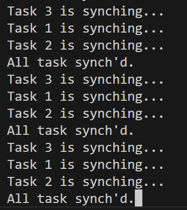

1. THE KERNEL ON A GLANCE
1.1. The design approach
RK0 Blog: About Processes, Tasks and Threads
On the embedded realm, probably because we lack a better abstraction, we use multithreading to fine-tune our load balance and, therefore, responsiveness to achieve real-time.
This is an arrangement: instead of having a single super-loop, we have many, each running on its own execution stack.
This arrangement yields an operating system entity to handle—a (logical) Concurrency Unit: in K0, we name it a Task (in RK0 a task is a thread.).
If no more details are to be provided, the kernel has a top and a bottom layer. On the top, the Executive manages the resources needed by the application. On the bottom, the Low-level Scheduler works as a software extension of the CPU. Together, they implement the Task abstraction — the Concurrency Unit that enables a multitasking environment.
In systems design jargon, the Executive enforces policy (what should happen). The Low-level Scheduler provides the mechanism (how it gets done). The services are the primitives that gradually translate policy decisions into concrete actions executed by the Scheduler.
K0’s goal is determinism on low-end devices. Its multitasking engine operates with no mimics of userland.

2. Core Mechanisms
This section provides a high-level description of the kernel core mechanisms: scheduler, timers, and memory allocator.
2.1. Scheduler
RK0 employs a Rate Monotonic Scheduler. Tasks are assigned priorities accordingly to their request rates - i.e., tasks with shorter periods are assigned to higher priorities. The highest priority is represented by the value '0'; the lowest is represented by the value '31'.
A scheduler remark is its constant time-complexity (O(1)) and low-latency. This was achieved by careful composing the data structures along with a efficient 'choose-next' algorithm. This is detailed below.
|
Time-slice was deprecated on version 0.5.0. |
2.1.1. Scheduler Data Structures
2.1.1.1. Task Control Block
Threads are represented as Tasks. Every task is associated to a Task Control Block structure. This is a record for stack, resources and time management. The table below partially represents a Task Control Block (as this document is live, this might not reflect the exact fields of the current version).
| Task Control Block |
|---|
Task name |
Saved Stack Pointer |
Stack Address |
Stack Size |
Status |
Assigned Priority |
Current Priority |
Self-Assigned ID |
Last wake-time |
Run-To-Completion Flag |
Time-out Flag |
List of owned Mutexes |
Aggregated Timeout Node |
Aggregated Task List Node |
Tasks are static - they cannot be created on runtime, to be destroyed, to fork or join.
In practice, tasks are either RUNNING or 'waiting' for their turn to run. Now, we need to clearly define WAITING and READY.
-
A READY task will be dispatched - therefore, switch to RUNNING, whenever it is the highest priority READY task.
-
A WAITING task depends on a condition, generalised as an event to switch to READY.

Logically, the WAITING state will assume different pseudo-states, related to the kind of event that will switch a task to READY:
-
SLEEPING: a task suspends itself and goes to sleep for a given period; or suspends itself until receiving a wake signal, representing an event.
-
PENDING : the task suspended itself waiting for a combination of signal flags.
-
BLOCKED: A task is blocked on a mutex or semaphore.
-
SENDING/RECEIVING: A producer task when blocking on a Message Passing object switches is status to SENDING. A consumer, to RECEIVING.
The scheduler rules, not the heap.
RK0 tasks are static.
It’s a design decision rooted in real-time correctness.
Stacks are defined and passed explicitly when creating a task.
The wins:
-
A memory layout the systems programmer actually knows.
-
No alignment traps.
-
Link-time visibility:
-
Each task’s stack is a named symbol in the linker map.
-
You can inspect and verify the memory layout before flashing.
-
A simple
objdumpreveals all stack allocations — that’s peace of mind.
-

2.1.1.2. Task Queues
The backbone of the queues where tasks will wait for their turn to run is a circular doubly linked list: removing any item from a doubly list takes O(1) (provided we don’t need to search the item). As the kernel knows each task’s address, adding and removing is always O(1). Singly linked lists, can’t achieve O(1) for removal in any case.
2.1.1.3. Ready Queue Table
Another design choice towards achieving O(1) is the global ready queue, which is a table of FIFO queues—each queue dedicated to a priority—and not a single ordered queue. So, enqueuing a ready task is always O(1). Given the sorting needed, if tasks were placed on a single ready queue, the time complexity would be O(n).
2.1.1.4. Waiting Queues
The scheduler does not have a unique waiting queue. Every kernel object that has the ability to block a task has an associated waiting queue. Because these queues are a scheduler component, they follow a priority discipline: the highest priority task is dequeued first, always.
When an event capable to switch tasks from WAITING to READY happens, one or more tasks (depending on the mechanism) are then placed on the ready list, unique to is priority. Now they are waiting to be picked by the scheduler - that is READY definition.
2.1.2. The scheduling algorithm
As the ready queue table is indexed by priority - the index 0 points to the queue of ready tasks with priority 0, and so forth, and there are 32 possible priorities - a 32-bit integer can represent the state of the ready queue table. It is a BITMAP:
The BITMAP computation: ((1a) OR (1b)) AND (2), s.t.:
(1a) Every Time a task is readied, update: BITMAP |= (1U << task->priority );
(1b) Every Time an empty READY QUEUE becomes non-empty, update: BITMAP |= (1U << queueIndex)
(2): Every Time READY QUEUE becomes empty, update: BITMAP &= ~(1U << queueIndex);
EXAMPLE:
Ready Queue Index : (6)5 4 3 2 1 0
Not empty : 1 1 1 0 0 1 0
------------->
(LOW) Effective Priority (HIGH)
In this case, the scenario is a system with 7 priority task levels. Queues with priorities 6, 5, 4, and 1 are not empty.In RK0 source code, the following routines implement the bitmap update:
/* Enqueue a TCB on on the tail of TCB list */
RK_ERR kTCBQEnq( RK_TCBQ *const kobj, RK_TCB *const tcbPtr)
{
RK_CR_AREA
RK_CR_ENTER
if (kobj == NULL || tcbPtr == NULL)
{
kErrHandler( RK_FAULT_OBJ_NULL);
}
RK_ERR err = kListAddTail( kobj, &(tcbPtr->tcbNode));
if (err == 0)
{
/* if a task was enqueued on a list within the ready queue table, update the 'ready bitmap' */
if (kobj == &readyQueue[tcbPtr->priority])
readyQBitMask |= 1 << tcbPtr->priority;
}
RK_CR_EXIT
return (err);
}
/* Add a TCB on on the head of TCB list */
RK_ERR kTCBQJam( RK_TCBQ *const kobj, RK_TCB *const tcbPtr)
{
RK_CR_AREA
RK_CR_ENTER
if (kobj == NULL || tcbPtr == NULL)
{
kErrHandler( RK_FAULT_OBJ_NULL);
}
RK_ERR err = kListAddHead( kobj, &(tcbPtr->tcbNode));
if (err == 0)
{
if (kobj == &readyQueue[tcbPtr->priority])
readyQBitMask |= 1 << tcbPtr->priority;
}
RK_CR_EXIT
return (err);
}
/* Dequeue the head task from a list of TCBs */
RK_ERR kTCBQDeq( RK_TCBQ *const kobj, RK_TCB **const tcbPPtr)
{
if (kobj == NULL)
{
kErrHandler( RK_FAULT_OBJ_NULL);
}
RK_NODE *dequeuedNodePtr = NULL;
RK_ERR err = kListRemoveHead( kobj, &dequeuedNodePtr);
if (err != RK_SUCCESS)
{
return (err);
}
*tcbPPtr = RK_LIST_GET_TCB_NODE( dequeuedNodePtr, RK_TCB);
if (*tcbPPtr == NULL)
{
kErrHandler( RK_FAULT_OBJ_NULL);
return (RK_ERR_OBJ_NULL);
}
RK_TCB *tcbPtr_ = *tcbPPtr;
RK_PRIO prio_ = tcbPtr_->priority;
/* if the list is in the ready queue table and is now empty
update 'ready bitmap' */
if ((kobj == &readyQueue[prio_]) && (kobj->size == 0))
readyQBitMask &= ~(1U << prio_);
return (RK_SUCCESS);
}
/* Remove an specific TCB from a TCB List */
RK_ERR kTCBQRem( RK_TCBQ *const kobj, RK_TCB **const tcbPPtr)
{
if (kobj == NULL || tcbPPtr == NULL)
{
kErrHandler( RK_FAULT_OBJ_NULL);
}
RK_NODE *dequeuedNodePtr = &((*tcbPPtr)->tcbNode);
RK_ERR err = kListRemove( kobj, dequeuedNodePtr);
if (err != RK_SUCCESS)
{
return (err);
}
*tcbPPtr = RK_LIST_GET_TCB_NODE( dequeuedNodePtr, RK_TCB);
if (*tcbPPtr == NULL)
{
kErrHandler( RK_FAULT_OBJ_NULL);
}
RK_TCB *tcbPtr_ = *tcbPPtr;
RK_PRIO prio_ = tcbPtr_->priority;
if ((kobj == &readyQueue[prio_]) && (kobj->size == 0))
readyQBitMask &= ~(1U << prio_);
return (RK_SUCCESS);
}The Idle Task priority is assigned by the kernel, during initialisation, taking into account all priorities the system programmer has defined. Unless user tasks are occupying all 32 priorities, the Idle Task is treated as an ordinary lowest priority and has a position in the ready queue table. If not, the idle task on practice will have no queue position and will be selected when the BITMAP is 0. In the above bitmap, the idle task is in readyQueue[6].
Having Ready Queue Table bitmap, we find the highest priority non-empty task list as follows:
(1) Isolate the rightmost '1':
RBITMAP = BITMAP & -BITMAP. (- is the bitwise operator for two's complement: ~BITMAP + 1) `In this case:
[31] [0] : Bit Position
0...1110010 : BITMAP
1...0001110 : -BITMAP
=============
0...0000010 : RBITMAP
[1]The rationale here is that, for a number N, its 2’s complement -N, flips all bits - except the rightmost '1' (by adding '1') . Then, N & -N results in a word with all 0-bits except for the less significant '1'.
(2) Extract the rightmost '1' position:
-
For ARMv7M, we benefit from the
CLZinstruction to count the leading zeroes. As they are the the number of zeroes on the left of the rightmost bit '1', this value subtracted from 31 to find the Ready Queue index.
__RK_INLINE static inline
unsigned __getReadyPrio(unsigned readyQBitmap)
{
unsigned ret;
__ASM volatile (
"clz %0, %1 \n"
"neg %0, %0 \n"
"add %0, %0, #31\n"
: "=&r" (ret)
: "r" (readyQBitmap)
:
);
return (ret);
}In the example above, this instruction would return #30, and #31 - #30 = #01.
-
For ARMv6M there is no suitable hardware instruction. The algorithm is totally written in C and counts the trailing zeroes, thus, the index number. Although it might vary depending on your compiler settings, it takes ~11 cycles (note it is still O(1)):
/*
De Brujin's multiply+LUT
(Hacker's Delight book)
*/
/* table is on a ram section for efficiency */
__K_SECTION(getReadyTable)
static unsigned table[32] =
{
0, 1, 28, 2, 29, 14, 24, 3, 30, 22, 20, 15, 25, 17, 4, 8,
31, 27, 13, 23, 21, 19, 16, 7, 26, 12, 18, 6, 11, 5, 10, 9
};
__RK_INLINE static inline
unsigned __getReadyPrio(unsigned readyQBitmap)
{
unsigned mult = readyQBitmap * 0x077CB531U;
/* Shift right the top 5 bits
*/
unsigned idx = (mult >> 27);
/* LUT */
unsigned ret = (unsigned)table[idx];
return (ret);
}For the example above, mult = 0x2 * 0x077CB531 = 0x0EF96A62. The 5 leftmost bits (the index) are 00001 → table[1] = 1.
During a context switch, the procedures to find the highest priority non-empty ready queue table index are as follows:
static inline PRIO kCalcNextTaskPrio_()
{
if (readyQBitMask == 0U)
{
return (idleTaskPrio);
}
readyQRightMask = readyQBitMask & -readyQBitMask;
PRIO prioVal = (PRIO) (__getReadyPrio(readyQRightMask));
return (prioVal);
}
VOID kSchSwtch(VOID)
{
/* O(1) complexity */
nextTaskPrio = calcNextTaskPrio_();
RK_TCB* nextRunPtr = NULL;
/* O(1) complexity */
RK_ERR err = kTCBQDeq( &readyQueue[nextTaskPrio], &nextRunPtr);
if ((nextRunPtr == NULL) || (err != RK_SUCCESS))
{
kErrHandler(FAULT_READYQ);
}
runPtr = nextRunPtr;
}
|
2.1.3. Scheduler Determinism
2.1.3.1. Preemptive Scheduling
This is a simple test to establish some evidence the scheduler obeys the pre-emption criteria: a higher priority task always pre-empts a lower priority task.
Task1, 2, 3, 4 are in descending order of priority. If the scheduler is well-behaved, we shall see counters differing by "1".
VOID Task1(VOID* args)
{
RK_UNUSEARGS
while(1)
{
counter1++;
kPend(RK_WAIT_FOREVER);
}
}
VOID Task2(VOID* args)
{
RK_UNUSEARGS
while(1)
{
counter2++;
kSignal(task1Handle); /* shall immediately be preempted by task1 */
kPend(RK_WAIT_FOREVER); /* suspends again */
}
}
VOID Task3(VOID* args)
{
RK_UNUSEARGS
while(1)
{
counter3++;
kSignal(task2Handle); /* shall immediately be preempted by task2 */
kPend(RK_WAIT_FOREVER); /* suspends again */
}
}
VOID Task4(VOID* args)
{
RK_UNUSEARGS
while(1)
{
counter4++;
/* shall immediately be preempted by task3 */
kSignal(task3Handle); /
/* only resumes after all tasks are pending again */
}
}This is the output after some time running:

In the above example we have used direct signals. Using semaphores:
RK_SEMA sema1;
RK_SEMA sema2;
RK_SEMA sema3;
RK_SEMA sema4;
VOID kApplicationInit(VOID)
{
kSemaInit(&sema1, RK_SEMA_COUNT, 0);
kSemaInit(&sema2, RK_SEMA_COUNT, 0);
kSemaInit(&sema3, RK_SEMA_COUNT, 0);
kSemaInit(&sema4, RK_SEMA_COUNT, 0);
}
VOID Task1(VOID* args)
{
RK_UNUSEARGS
while (1)
{
counter1++;
kSemaWait(&sema1, RK_WAIT_FOREVER);
}
}
VOID Task2(VOID* args)
{
RK_UNUSEARGS
while (1)
{
counter2++;
kSemaSignal(&sema1);
kSemaWait(&sema2, RK_WAIT_FOREVER);
}
}
VOID Task3(VOID* args)
{
RK_UNUSEARGS
while (1)
{
counter3++;
kSemaSignal(&sema2);
kSemaWait(&sema3, RK_WAIT_FOREVER);
}
}
VOID Task4(VOID* args)
{
RK_UNUSEARGS
while (1)
{
counter4++;
kSemaSignal(&sema3);
}
}
Here tick is running @ 0.5us
2.1.3.2. Cooperative Scheduling
If we set all tasks at the same priority and every tasks yields the processor, they will run on a round-robin fashion, one after another. So, every time we pause chances are we will be "somewhere in the middle" of a round.
If every task increases a counter before yielding what we expect to see is a set of counters on a fashion {K, K, K, K-1, K-1, K-1}. Importantly a counter will not offset another by more than 1 if the scheduler is deterministic.
/* All tasks have the same priority */
VOID Task1(VOID* args)
{
RK_UNUSEARGS
while (1)
{
count1 += 1;
kYield();
}
}
VOID Task2(VOID* args)
{
RK_UNUSEARGS
while (1)
{
count2 += 1;
kYield();
}
}
VOID Task3(VOID* args)
{
RK_UNUSEARGS
while (1)
{
count3 += 1;
kYield();
}
}
VOID Task4(VOID* args)
{
RK_UNUSEARGS
while (1)
{
count4 += 1;
kYield();
}
}
VOID Task5(VOID* args)
{
RK_UNUSEARGS
while (1)
{
count5 += 1;
kYield();
}
}The picture below show the results after ~ 13 million rounds.

|
The mindful design choices for data structures and algorithms yielded a core system with highly deterministic behaviour - maintained even under stringent time constraints. |
2.1.4. Common scheduling pitfalls
To avoid the most common pitfalls when scheduling tasks the system programmer should be aware that:
-
The scheduler behaviour is to choose the highest priority READY task to run. Always.
-
For a set of tasks with the same priority, the schedule works on a First-In-First-Out discipline
-
A task must switch to READY state before being eligible for scheduling.
-
A task will switch from RUNNING to READY if yielding or if being preempted by a higher priority task.
-
Otherwise it can only go to a WAITING state, and eventually switch back to READY.
-
When a task is preempted it switches from RUNNING to READY and is placed back to the head position of its Ready Queue. It means that it will be resumed as soon as it is the highest priority ready task again.
-
On the contrary, if a task yields, it is telling the scheduler that it has completed its cycle. Then, it will be enqueued on the ready queue tail - the last queue position.
-
When switching from WAITING to READY, the task is also enqueued on the tail.
-
So, tasks with the same priority will round-robin as long as they yield or wait.
|
The bottomline is that, tasks with the same priorities run on FIFO discipline. A task with priority 'N' can make other tasks with priority 'N' to starve if it never yields or wait — it got in, but never out. |
2.2. Timers
|
Context switching is probably the largest overhead on a kernel. The time spent on the System Tick handler contributes to a large portion of this overhead. Design Choice:
Benefits:
|
| Timeout Node |
|---|
Timeout Type |
Absolute Interval (Ticks) |
Relative Interval (Ticks) |
Waiting Queue Address |
Next Timeout Node |
Previous Timeout Node |
Every task is prone to events triggered by timers, which are described in this section. Every Task Control Block has a node to a timeout list.
This list is a doubly linked list, ordered as a delta list. For instance, three timers (T1,8), (T2,6) and (T3,10) will be ordered as a sequence <(T2,6), (T1,2), (T3,2)> - so it counts <6, (6)+2, ((6)+2)+2>.
Thus, for every system tick, only the head element on the list needs to be decreased - yielding O(1) - another design choice towards deterministic behaviour.
2.2.1. Sleep Timers
-
kSleep(ticks)Suspends the calling task immediatel. When readied, the task will be dispatched once it is the higher priority task, and a will be suspended for the same amount ofticks, no matter how many ticks have elapsed between one activation and another. -
kSleepUntil(absolute_ticks)Suspends the calling task and adjusts the sleeping time at every activation, to compensate for time drifts.
In a rate-monotonic scheduler higher priorities are to be assigned to tasks with higher request rates, that is, short periods. Therefore, giving a high-priority task a long absolute_ticks, or making blocking calls within a task that uses this primitive is an anti-pattern. Note no snippet in this docbook using this primitive has blocking calls.
|
2.2.2. Blocking Time-out
These are timers associated with kernel calls that are blocking. Thus, establishing an upper bound waiting time might benefit them. When the time for unblocking is up, the kernel call returns, indicating a timeout error. When blocking is associated to a kernel object (other than the Task Control Block), the timeout node will store the object waiting queue’s address, so it can be removed if time expires.
2.2.3. Callout Timers
| Timer Control Block |
|---|
Option: Reload/One-Shot |
Phase (Initial Delay) |
Callout Function Pointer |
Callout Argument |
Timeout Node |
These are Application Timers that will issue a callback when expiring. In addition to a callout function, an Application Timer receives an initial phase delay and a period and can choose to run once (one-shot) or auto-reload itself.
The callback runs within a System Task with priority 0 and is run-to-completion - what makes the scheduler prioritise it over other tasks. Callouts must be made short and unblocking - as they can cause high CPU contention.
For clarity, Timer Callouts are on a separate list in the kernel, although they share the same TIMEOUT node.
2.3. System Tick
A dedicated peripheral that generates an interrupt after a defined period provides the kernel time reference. For ARMv6/7M, this peripheral is the built-in SysTick, a 24-bit counter timer. On every tick, the handler performs some housekeeping and assesses the need to call a context switch.
The "housekeeping" accounts for global timer tracking and any tick-dependent condition that might change a task status.
When a timer expires, it might switch a task from WAITING to READY or dispatch a callback. In the case of a callback, this will also trigger a context-switching for the TimerHandler System Task in which the callback is executed and the related timer(s) are updated properly.
Note that tasks might switch from WAITING to READY for reasons other than tick-related. In these cases, context switching might be triggered immediately if the readied task can preempt the running task.
2.4. Memory Allocator
| Memory Allocator Control Block |
|---|
Associated Block Pool |
Number of Blocks |
Block Size |
Number of Free Blocks |
Free Block List |
Remember that the standard malloc() leads to fragmentation and (also, because of that) is highly indeterministic. Unless we use it once - to allocate memory before starting up, it doesn’t fit. But often, we need to 'multiplex' memory amongst tasks over time, that is, to dynamically allocate and deallocate.
To avoid fragmentation, we use fixed-size memory blocks. A simple approach would be a static table marking each block as free or taken. With this pattern, you will need to 'search' for the next available block, if any - the time for searching changes - what is indeterministic. A suitable approach is to keep track of what is free using a dynamic table—a linked list of addresses.
We use "meta-data" to initialise the linked list. Every address holds the "next" address value. All addresses are within the range of a pool of fixed-size blocks. This approach limits the minimal size of a block to the size of a memory address - 32-bit for our supported architecture.
Yet, this is the cheapest way to store meta-data. If not stored on the empty address itself, an extra 32-bit variable would be needed for each block, so it could have a size that is less than 32-bit.
|
Allocating memory on run-time is a major source of latency (1), indeterministic (2) behaviour and footprint overhead (3). Design choice: the allocator’s design achieves low-cost, deterministic, fragmentation-free memory management by using fixed-size word-aligned block sizes (1)(2), and embedding metadata within the memory blocks themselves (3). Benefits: run-time memory allocation benefits are provided with no real-time drawbacks. |
Importantly, the kernel will always round up the block size to the next multiple of 4. Say the user creates a memory pool, assining blocks to 6-byte wide; they will turn into 8-byte blocks.
2.4.1. How it works
When a routine calls alloc(), the address to be returned is the one a "free list" is pointing to, say addr1. Before returning addr1 to the caller, we update the free list to point to the value stored within addr1 - say addr8 at that moment.
When a routine calls free(addr1), we overwrite whatever has been written in addr1 with the value-free list point to (if no more alloc() were issued, it would still be addr8), and addr1 becomes the free list head again.
Allocating and deallocating fixed-size blocks using this structure and storing meta-data this way is as deterministic (O(1)) and economic as we can get for dynamic memory allocation.
A drawback is if having a routine writing non-allocated memory within a pool it will spoil the meta-data and the Allocator will fail.
2.4.2. Memory Allocator Determinism
The memory allocator (if well employed) will never fail; it might take the same amount of time to allocate and free a block. In the test below, three tasks with the same priority are allocating, increasing a counter, and freeing a block of 128 bytes. If the allocator exhibits deterministic behaviour, these counters might differ by at most 1 whenever we pause the device.
#include "application.h"
INT stack1[STACKSIZE];
INT stack2[STACKSIZE];
INT stack3[STACKSIZE];
RK_MEM bufPool;
#define BLOCK_SIZE 128
#define N_BLOCKS 3
BYTE buf[N_BLOCKS][BLOCK_SIZE];
VOID kApplicationInit(VOID)
{
kMemInit(&bufPool, buf, BLOCK_SIZE, N_BLOCKS);
}
volatile int counter1, counter2, counter3=0;
VOID Task1(VOID* args)
{
RK_UNUSEARGS
while (1)
{
BYTE* addr = kMemAlloc(&bufPool);
kassert(addr!=NULL);
RK_ERR err = kMemFree(&bufPool, addr);
kassert(err==0);
counter1++;
kYield();
}
}
VOID Task2(VOID* args)
{
RK_UNUSEARGS
while (1)
{
BYTE* addr = kMemAlloc(&bufPool);
kassert(addr!=NULL);
RK_ERR err = kMemFree(&bufPool, addr);
kassert(err==0);
counter2++;
kYield();
}
}
VOID Task3(VOID* args)
{
RK_UNUSEARGS
while (1)
{
BYTE* addr = kMemAlloc(&bufPool);
kassert(addr!=NULL);
RK_ERR err = kMemFree(&bufPool, addr);
kassert(err==0);
counter3++;
kYield();
}
}Below are the results after ~2.5 million ticks of 0.5 ms.

3. Inter-Task Communication
Inter-Task Communication (ITC) refers to the mechanisms that enable tasks to coordinate/cooperate/synchronise by means of sending or receiving information that falls into two logical categories: Signals or Messages.
-
Signals: A signal is solely defined by its absence or presence. The meaning is implicit.
-
Messages: When the operations used for tasks to communicate also allow conveying a payload, these mechanisms are regarded as Message Passing.
3.1. Sleep-Wake Events
| Event Control Block |
|---|
Sleeping Queue |
Timeout Node |
The simplest mechanism to handle events are the methods sleep(), wake() and signal() acting on an EVENT kernel object.
The sole purpose of the EVENT kernel object is to have a unique waiting queue associated to an event. There is no other data — e.g., one cannot know if the event has ever happened.
Signals will not be queued (or latched).
This simplicity has gains:
-
Sometimes we cannot, define what happens if a signal is late; so, if a task is not waiting (that is the same as 'ready for the signal') when it is issued, drop it.
-
Now we have a try semantics for posting signals. Semaphores lack them.
Besides, we use it to compose higher-level primitives. Possible constructions are Condition Variables and Monitor-like mechanisms, as will be demonstrated later.
Thus, the operation sleep(&event, timeout) always put to the caller task to sleep (except if using a timeout=0, the call has no effect).
A signal(&event) will wake-up a single task - the highest priority.
A wake(&event, n, &r) is a broadcast: at most n sleeping tasks will switch to READY. This n is a means of providing the programmer a worst-case-time¹. r will store the number of remaining tasks, if any.
If the programmer is willing to wake ALL tasks, they can either use the flush(&event) helper macro or use n=0.
If there are no tasks sleeping for an event signal/wake operations will have no effect at all — they are lost.
Finally, a query() operation on an Event object will return the number of sleeping tasks.
|
As dequeing tasks from a waiting queue is made on a critical region with global interrupts disabled, doing so with a unknown bound time, makes the operation unpredictable. But, since tasks are not dynamically created one should be able to predict the worst-case. |
3.2. Direct Signals
| Within Task Control Block |
|---|
Current Flags |
Required Flags |
Options |
|
This primitive does not mimic POSIX or UNIX/BSD Signals. |
Each Task Control Block stores event notifications other tasks will raise. Often we define that a 32-bit Signal carries 32 signal/event flags — it can represent a combination of 32 different events, if defining 1 event/bit. A bit set means an event is pending to be detected. A detected event is always consumed, that is, the bit is cleared.
Bitwise friendly, the API is written as set() (as to signal/post), get() (as to wait/pend).
A task checks for a combination of events it is expecting. This combination can be satisfied if ANY (OR logic) of the required bits are set or if ALL of the required bits are set (AND logic).
Thus, if the condition is not met the task can optionally suspends, switching to the logical state PENDING.
When another task issues a set() which result satisfies the waiting condition, the task state is then READY. The matched flags are consumed (cleared).
A set is always an OR operation of an input mask over the current value.
Others operations are to query a tasks’s event register, and to clear its own registers.
One possible usage pattern is a task’s cycle begins checking for any events (it is able/supposed to handle).
If using it on a supervisor task — it can create a neat event-driven pattern for a soft/firm real-time system.
VOID SupervisorTask(VOID *args)
{
RK_UNUSEARGS
ULONG gotFlags = 0UL;
while(1)
{
/* range: 0x01-0xFFFF, any bit. store in gotFlags. do not block.*/
RK_ERR err = kSignalGet(0xFFFF, RK_FLAGS_ANY, &gotFlags, RK_NO_WAIT);
if (err == RK_SUCCESS)
{
if (gotFlags & PENDING_AIRFLOW_INCREASE):
{ /* notify actuator's task with the proper signal */
kSignalSet(airFlowTaskHandle, AIRFLOW_INCREASE_SIGNAL);
}
/* others... */
}
kSleepUntil(SUPERVISOR_T_PERIOD);
}
}Task Signals are the the only ITC primitive that cannot be disabled.
0x00 is invalid for both set() and get() operations.
3.3. Semaphores
| Semaphore Control Block |
|---|
Counter (Signed Integer) |
Semaphore Type (Counter/Binary) |
Waiting Queue |
Timeout Node |
A semaphore S is a nonnegative integer variable, apart from the operations it is subjected to. S is initialized to a nonnegative value. The two operations, called P and V, are defined as follows:
P(S): if S > 0 then S := S-1, else the process is suspended until S > 0.
V(S): if there are processes waiting, then one of them is resumed; else S := S+1.
(Dijkstra, 1968)
Semaphores are public kernel objects for signalling and waiting for events. Effectively they are event counters.
It means the primitives post() and pend() will increase (record the event) and decrease (consume the event) the semaphore counter. A semaphore cannot be initialised with a negative value.
When pend() is issued on a semaphore which counter is 0, the caller switches to a BLOCKED state, and is enqueued within the semaphore queue.
After that, every signal issued to a semaphore releases a single task, ordered by priority.
Thus, tasks cooperate over a public semaphore by signalling and waiting for events.
3.3.1. Counting and Binary Semaphores
A Counting Semaphore is the original semaphore as introduced by Dijkstra in late 60’s.
It counts up to N, limited by the maximum number an integer can represent (hardly you’d want that though).
The typical use case for Counting Semaphores is as a "credit tracker" — one uses it to verify (wait/pend) and indicate (signal/post) the availability of a countable resource — say, number of slots within a queue.
A Binary Semaphore is a specialisation: it counts up to 1 and down to 0 — we often say its either FULL or EMPTY. The typical use case is for task-to-task (unilateral or bi-lateral), or ISR-to-task (unilateral) synchronisation.
In this sense, they overlap the Direct Signals mechanism, that can be seen as a pack of private binary semaphores (only the task itself can pend but any task can post).
They can also be used as Locks for mutual-exclusion, but it has drawbacks as will be explained later.
Semaphores can also broadcast a signal, on the same way as described for EVENTS, either by wake(n) or flush().
For both Counting and Binary Semaphores, a post() will increase its internal counter from 0 to 1 only and if only there are no tasks on the waiting queue.
Thus, although the counter is a signed integer, it shall not assume values less than 0. When debugging don’t expect to see a negative value on the semaphore counter as an indication of the number of waiting tasks — the number to inspect in this case, is the waiting queue size (as a linked list, this size is dynamic).
Finally, a query() operation on a semaphore will return a negative value if this is the number of waiting tasks on the semaphore queue. A non-negative value (>= 0) is the semaphore counter value.
The snippet below shows two tasks lock-stepping by posting and pending on (binary) semaphores. Task2 depends on Task1 finishing 'work1' to perform 'work2'. And vice-versa.
(Note Direct Signals are a better choice for this use-case.)
RK_SEMA work1Sema;
RK_SEMA work2Sema;
VOID kApplicationInit(VOID)
{
/* semaphores init at 0 */
kSemaInit(&work1Sema, RK_SEMA_BIN, 0);
kSemaInit(&work2Sema, RK_SEMA_BIN, 0);
}
VOID Task1(VOID* args)
{
RK_UNUSEARGS
while (1)
{
doWork1();
kSemaPost(&work1Sema);
kSemaPend(&work2Sema, RK_WAIT_FOREVER);
/* T1 finished. Waiting for T2. */
}
}
VOID Task2(VOID* args)
{
RK_UNUSEARGS
while (1)
{
kSemaPend(&work1Sema, RK_WAIT_FOREVER);
doWork2();
kSemaPost(&work2Sema);
}
}3.3.2. Mutex Semaphores (Locks)
| Mutex Control Block |
|---|
Locked State (Boolean) |
Owner |
Waiting Queue |
Timeout Node |
Mutex Node (list node within the owner TCB) |
Some code regions are critical in that they cannot be accessed by more than one task at once. Acquiring (lock()) a mutex before entering a region and releasing it when leaving makes that region mutually exclusive.
A Mutex is another semaphore specialisation — it can be seen as a binary semaphore with a notion of ownership - when a task susccesfully acquires a mutex is now the owner, and only this task can release it.
If a task tries to acquire an already locked mutex, it switches to BLOCKED state until the mutex is unlocked by its owner. Then, the highest priority task waiting to acquire the resource is dequeued, as on semaphores.
However, unlike semaphores, the complementary operation, unlock(), when issued by a non-owner, has undefined behaviour. In K0, it will be a hard fault.
Mutexes are solely for mutual exclusion; they cannot be used for signalling. It is common to use Counting Semaphores initialised as 1, or Binary Semaphores for mutual exclusion.
However, particularly for a Counting Semaphore, if the count increases twice in a row, the mutual exclusion is gone. For both, Priority Inversion can become a problem, as will be explained.
The snippet below shows a consumer-producer pattern for a buffer with K slots (bounded buffer pattern). Two semaphores track the number of slots for the producer and items for the consumer. The mutex prevents any write or read from being disrupted.
RK_SEMA item;
RK_SEMA space;
RK_MUTEX lock;
#define N (K) /*some K>1*/
typedef struct mesg
{
UINT field1;
UINT field2;
UINT field3;
UINT field4;
} Mesg_t; /* a 16-byte message */
/* a ring buffer of messages */
Mesg_t mailbox[N]={0};
kApplicationInit(VOID)
{
kSemaInit(&item, RK_SEMA_COUNT, 0); /* no items */
kSemaInit(&space, RK_SEMA_COUNT, N); /* N buffers available */
kMutexInit(&lock);
}
/* circular buffer handling ommited */
/* wait for space, lock, write, unlock, signal there is item */
VOID PostMail(Mesg_t* sendPtr)
{
kSemaWait(&space, RK_WAIT_FOREVER);
kMutexLock(&lock, RK_WAIT_FOREVER);
memcpy(&mailbox[tail], sendPtr, sizeof(Mesg_t));
kMutexUnlock(&lock);
kSemaSignal(&item);
}
/* wait for item, lock, read, unlock, signal there is space */
VOID PendMail(Mesg_t* recvPtr)
{
kSemaWait(&item, RK_WAIT_FOREVER);
kMutexLock(&lock, RK_WAIT_FOREVER);
memcpy(recvPtr, &mailbox[head], sizeof(Mesg_t));
kMutexUnlock(&lock);
kSemaSignal(&space);
}3.3.2.1. Priority Inversion and the Priority Inheritance Protocol
Let TH, TM, and TL be three tasks with priority high (H), medium (M) and low (L), respectively. Say TH is dispatched and blocks on a mutex that 'TL' has acquired (i.e.: "TL is blocking TH").
If 'TM does not need the resource, it will run and preempt 'TL'. And, by transition, TH.
From now on, 'TH' has an unbounded waiting time because any task with priority higher than 'L' that does not need the resource indirectly prevents it from being unblocked — awful.
Mutexes in RK0 can implement a protocol called priority inheritance.
This protocol is characterised by this invariant, simply put:
At any instant a Task assumes the highest priority amongst the tasks it is blocking.
If employed on the situation described above, task TM cannot preempt TL, whose effective priority is H. (The nominal priority is the priority assigned to task when it is created, the effective priority is the value assumed when the protocol is applied.)
It is straightforward to reason about this when you consider the scenario of a single mutex.
But when locks nest — that is, more than one critical region — the protocol also needs to be:
-
Transitive: that is, if T1 is blocking T2, and T2 is blocking T3, if T3 has the highest priority, T3 propagates its priority to T1 via T2.
-
A task can own many mutex at once. Thus, when exiting the critical region is needs to look up all the waiting queues of the its owned mutexes, and assume the highest priority. If there are no blocked tasks behind, its nominal priority is then restored.
Below an example:
/* Task1 has the Highest nominal priority */
/* Task2 has the Medium nominal priority */
/* Task3 has Lowest nominal priority */
/* Note Task3 starts as 1 and 2 are delayed */
K_DECLARE_TASK(task1Handle, Task1, stack1, STACKSIZE)
K_DECLARE_TASK(task2Handle, Task2, stack2, STACKSIZE)
K_DECLARE_TASK(task3Handle, Task3, stack3, STACKSIZE)
RK_MUTEX mutexA;
RK_MUTEX mutexB;
VOID kApplicationInit(VOID)
{
kassert(!kCreateTask(&task1Handle, Task1, RK_NO_ARGS, "Task1", stack1, \
STACKSIZE, 1, RK_PREEMPT));
kassert(!kCreateTask(&task2Handle, Task2, RK_NO_ARGS, "Task2", stack2, \
STACKSIZE, 2, RK_PREEMPT));
kassert(!kCreateTask(&task3Handle, Task3, RK_NO_ARGS, "Task3", stack3, \
STACKSIZE, 3, RK_PREEMPT));
/* mutexes initialised with priority inheritance enabled */
kMutexInit(&mutexA, RK_INHERIT);
kMutexInit(&mutexB, RK_INHERIT);
}
VOID Task3(VOID *args)
{
RK_UNUSEARGS
while (1)
{
printf("@ %dms: [TL] Attempting to LOCK 'A' | Eff: %d | Nom: %d\n", kTickGet(),
runPtr->priority, runPtr->prioReal);
kMutexLock(&mutexA, RK_WAIT_FOREVER);
printf("@ %dms: [TL] LOCKED 'A' (in CS) | Eff: %d | Nom: %d\n", kTickGet(),
runPtr->priority, runPtr->prioReal);
kBusyWait(60); /* <-- important */
printf("@%dms: [TL] About to UNLOCK 'A' | Eff: %d | Nom: %d\n", kTickGet(),
runPtr->priority, runPtr->prioReal);
kMutexUnlock(&mutexA);
printf("--->");
printf("@%dms: [TL] Exit CS | Eff: %d | Nom: %d\n", kTickGet(),
runPtr->priority, runPtr->prioReal);
kSleep(4);
}
}
VOID Task2(VOID *args)
{
RK_UNUSEARGS
while (1)
{
kSleep(5);
printf("@%dms: [TM] Attempting to LOCK 'B' | Eff: %d | Nom: %d\n", kTickGet(),
runPtr->priority, runPtr->prioReal);
kMutexLock(&mutexB, RK_WAIT_FOREVER);
printf("@%dms: [TM] LOCKED 'B', now trying to LOCK 'A' | Eff: %d | Nom: %d\n",
kTickGet(), runPtr->priority, runPtr->prioReal);
kMutexLock(&mutexA, RK_WAIT_FOREVER);
printf("@%dms: [TM] LOCKED 'A' (in CS) | Eff: %d | Nom: %d\n", kTickGet(),
runPtr->priority, runPtr->prioReal);
kMutexUnlock(&mutexA);
printf("@%dms: [TM] UNLOCKING 'B' | Eff: %d | Nom: %d\n", kTickGet(),
runPtr->priority, runPtr->prioReal);
kMutexUnlock(&mutexB);
printf("--->");
printf("@%dms: [TM] Exit CS | Eff: %d | Nom: %d\n", kTickGet(),
runPtr->priority, runPtr->prioReal);
}
}
VOID Task1(VOID *args)
{
RK_UNUSEARGS
while (1)
{
kSleep(2);
printf("@%dms: [TH] Attempting to LOCK 'B'| Eff: %d | Nom: %d\n", kTickGet(),
runPtr->priority, runPtr->prioReal);
kMutexLock(&mutexB, RK_WAIT_FOREVER);
printf("@%dms: [TH] LOCKED 'B' (in CS) | Eff: %d | Nom: %d\n", kTickGet(),
runPtr->priority, runPtr->prioReal);
kMutexUnlock(&mutexB);
printf("--->");
printf("@%dms: [TH] Exit CS | Eff: %d | Nom: %d\n", kTickGet(),
runPtr->priority, runPtr->prioReal);
}
}
In the image above you can see on the left that tasks are running interleaving medium, higher and low priorities, but every time a higher priority task is blocked by a lower priority task its effective priority is boosted (green dots).
Furthermore, the nested critical sections always finish on the order H→M→L. This means that although some priority inversion has happened, the higher priority tasks have finished earlier than the lower ones. The mechanism is working.
Importantly, we can loosely state that the time for nested locks is bounded to the maximum time a lower priority task will be within a critical region. You can see that on the picture by looking at the red and yellow dots. The time elapsed is the 60ms the lowest priority tasks uses on the busy-wait call.
Mutexes in RK0 are not recursive; because recursive is not a property of Mutexes in RK0 that are not recursive.
That said,
| A locked mutex which owner tries to lock more than once will result on a hard fault. |
This way, the kernel prevents the madness of reentrant calls on critical sections.
Mutexes vs Binary Semaphores
There is (or used to be) a lot of fuss about whether binary semaphores are appropriate to use as locks. As a practical guideline: if all tasks sharing the resource have the same priority, the use of a binary semaphore can be appropriate, as they are considerably faster.
The drawback is the lack of ownership—any task can accidentally release the resource. On a large codebase with many contributors, this can become a real problem.
For tasks with different priorities, binary semaphores should never be considered for mutual exclusion.
Counting semaphores initialised as 1 should also not be considered for locking. If the count ever increases above 1, mutual exclusion is lost and multiple tasks can enter the critical section at once.
3.4. Condition Variables
Composing Events and Mutexes leverages Condition Variables. Whenever a task needs to test for a condition before proceeding, it locks a mutex to test the condition within a critical region. If the condition evaluates true, it proceeds and unlock the mutex at the end.
If the condition is evaluated as false, the task goes to sleep - to wait for a wake signal when the condition is true. The detail is that it goes to sleep and unlocks the mutex all in an atomic operation. When task is awaken it locks the mutex again.
The example below, shows a Synchronisation Barrier. Three tasks need to reach a specific point of the program before proceeding. This is done by calling a function synch(). When a third task enters the synchronisation barrier, it does not sleep; instead it broadcasts a waking signal to the other two.
Note that the mutex enforces a single active task within the barrier. They enter and leave on a 'turnstile'.
/* Synchronisation Barrier */
RK_EVENT syncEvent;
UINT syncCounter;
RK_MUTEX syncMutex;
#define SYNC_CONDITION (syncCounter>=3)
VOID kApplicationInit(VOID)
{
kMutexInit(&syncMutex);
kEventInit(&syncEvent);
syncCounter = 0;
}
static VOID synch(VOID)
{
kMutexLock(&syncMutex, RK_WAIT_FOREVER);
syncCounter += 1;
if (!(SYNC_CONDITION))
{
/* must be atomic */
kDisableIRQ();
kMutexUnlock(&syncMutex);
kEventSleep(&syncEvent, RK_WAIT_FOREVER);
kEnableIRQ();
/* task wakes here */
kMutexLock(&syncMutex, RK_WAIT_FOREVER);
}
else
{
kPuts("All task synch'd.\n\r");
syncCounter = 0;
kEventFlush(syncEvent);
}
/* every task that leaves, unblock a task from the mutex waiting queue */
kMutexUnlock(&syncMutex);
}
VOID Task1(VOID* args)
{
RK_UNUSEARGS
while (1)
{
kSleep(5);
kPuts("Task 1 is synching...\n\r");
synch();
}
}
VOID Task2(VOID* args)
{
RK_UNUSEARGS
while (1)
{
kSleep(8);
kPuts("Task 2 is synching...\n\r");
synch();
}
}
VOID Task3(VOID* args)
{
RK_UNUSEARGS
while (1)
{
kSleep(3);
kPuts("Task 3 is synching...\n\r");
synch();
}
}
Monitor-like constructions follow the pattern:
lock();
while(!condition)
{
unlock();
sleep();
lock();
}that is, the task loops testing the condition. To illustrate a monitor-like construction, consider the producer-consumer problem for a buffer with a single slot (aka Mailbox):
/* A core idea of Monitors is to act as an Abstract Data Type. Thus, the synchronisation objects are within the Mailbox_t data structure. The synchronisation details are not exposed on the API. It does not mean though that one always want that. */
typedef struct
{
ULONG *mailPtr; /* initialises NULL or with a valid value */
RK_EVENT notFull;
RK_EVENT notEmpty;
RK_MUTEX lockMail;
} Mailbox_t;
/* initialisation operation omitted */
VOID MailSend(Mailbox_t *const mboxPtr, ULONG const * const sendPtr)
{
kMutexLock(&mboxPtr->lockMail, RK_WAIT_FOREVER);
while (mboxPtr->mailPtr != NULL) /* mailbox is full */
{
/*atomic unlock, sleep */
kDisableIRQ();
kMutexUnlock(&mboxPtr->lockMail);
kEventSleep(&mboxPtr->notFull, RK_WAIT_FOREVER);
kEnableIRQ();
/* wake when not full, lock and test again */
kMutexLock(&mboxPtr->lockMail, RK_WAIT_FOREVER);
}
/* deposit mail, signal a consumer, and unlock */
mboxPtr->mailPtr = sendPtr;
kEventSignal(&mboxPtr->notEmpty);
kMutexUnlock(&mboxPtr->lockMail);
}
VOID MailRecv(Mailbox_t *const mboxPtr, ULONG **const recvPPtr)
{
kMutexLock(&mboxPtr->lockMail, RK_WAIT_FOREVER);
while (mboxPtr->mailPtr == NULL) /* mailbox is empty */
{
kDisableIRQ();
kMutexUnlock(&mboxPtr->lockMail);
kEventSleep(&mboxPtr->notEmpty, RK_WAIT_FOREVER);
kEnableIRQ();
kMutexLock(&mboxPtr->lockMail, RK_WAIT_FOREVER);
}
/* extract mail, signal a producer, and unlock */
*recvPPtr = mboxPtr->mailPtr; /* copies the value of mailPtr to *recvPPtr */
mboxPtr->mailPtr = NULL; /* empty mailbox */
kEventSignal(&mboxPtr->notFull);
kMutexUnlock(&mboxPtr->lockMail);
}
/* Note, if ever needing to test for a single condition as here, you would not go for this implementation unless all you got are events and mutexes.
*/|
Message Passing In real-time applications, Message Passing often encounters the following scenarios:
|
3.5. Mailbox
| Mailbox Control Block |
|---|
Mail Address |
Waiting queue |
Owner Task* |
While in GPOS jargon, mailboxes are queues of messages - as a distinction from pipes (that are byte streams) - in embedded system software, often mailboxes are said to have a capacity of a single item, and more recently, you will not find it as a distinct mechanism - you use a 1-item queue.
A Mailbox allows a task to exclusively write (post) and read (pend) a memory region and to be notified when another task writes or reads to it. Therefore its typical operation provides mutual exclusion and notification altogether: very handy.
A message within a mailbox is the address of an object. The sender and receiver agree on the concrete mail implementation as part of the mail interface contract; also the data pointed to has to remain unchanged until the receiver 'consumes' it. That is another part of the contract.
The semantics are simple: a Mailbox will be EMPTY when its storage points to NULL; otherwise, it is FULL. The mailbox will be empty/full after a successful pend()/post() operation.
When a producer post() to a FULL mailbox, it (optionally) blocks and is placed in the Mailbox waiting queue. The associated task will switch to the state SENDING.
Likewise, a consumer (optionally) blocks when issuing a pend() on an empty Mailbox. The task status switches to RECEIVING, and is enqueued in the mailbox waiting queue.
| A mailbox can be initialised as FULL if the initial pointer provided is non-null. |
Typical use-case is when one wants to deliver a signal along with a payload—a message as a signal.
Besides post() and pend(), other primitives are peek() to read without removing (non-destructive) and postovw() to overwrite whatever is in a full mailbox.
* we discuss ownership on message passing later.
|
Passing Messages by reference is a typical “embedded thing” – because it is cheap, deterministic and DMA-friendly. |
/****************************************************
*
* RK0 v0.5.0 - Profiling Testbench
*
* MCU: STM32F103RB @ 64MHz | 1ms tick
*
* Priority level:
* (highest)----------------------------->(lowest)
* Task1, Task2, Task3, Task4, Task5
*
* Description:
*
* Mailboxes passing tokens as signals to coordinate.
*
* If the mechanism is deterministic,
* counters will be within 1 from each other.
*
* Mailbox are initialised empty.
* kMboxInit(&mbox1, NULL);
* kMboxInit(&mbox2, NULL);
* kMboxInit(&mbox3, NULL);
* kMboxInit(&mbox4, NULL);
* kMboxInit(&mbox5, NULL);
*
**************************************************/
VOID Task1( VOID *args)
{
RK_UNUSEARGS
UINT *p;
while (1)
{
counter1++;
kMboxPend(&mbox1, (VOID*) &p, RK_WAIT_FOREVER);
}
}
VOID Task2( VOID *args)
{
RK_UNUSEARGS
UINT mesg = 1;
UINT *p;
while (1)
{
kMboxPost(&mbox1, &mesg, RK_WAIT_FOREVER);
counter2++;
kMboxPend(&mbox2, (VOID*) &p, RK_WAIT_FOREVER);
}
}
VOID Task3( VOID *args)
{
RK_UNUSEARGS
UINT mesg = 1;
UINT *p;
while (1)
{
kMboxPost(&mbox2, &mesg, RK_WAIT_FOREVER);
counter3++;
kMboxPend(&mbox3, (VOID*) &p, RK_WAIT_FOREVER);
}
}
VOID Task4( VOID *args)
{
RK_UNUSEARGS
UINT mesg = 1;
UINT *p;
while (1)
{
kMboxPost(&mbox3, &mesg, RK_WAIT_FOREVER);
counter4++;
kMboxPend(&mbox4, (VOID*) &p, RK_WAIT_FOREVER);
}
}
VOID Task5( VOID *args)
{
RK_UNUSEARGS
UINT mesg=1;
while(1)
{
kMboxPost(&mbox4, &mesg, RK_WAIT_FOREVER);
counter5++;
}
}
3.5.1. Usage Example: Zero-Buffer Channel
Some communications are unreliable or important enough so we need guarantees that not only the message could be sent, but also that it could be read.
On a zero-buffer channel we do not allow messages to be waiting so they are picked. The sender blocks, waiting for a confirmation that the message was retrieved by the receiver:
*/
/* sender needs to be sure message has arrived */
SenderTask:
err = kMboxPost(...., timeout);
if (err=ERR_TIMEOUT)
retryPost();
if (err==success)
{
/* pend on private bin semaphore, to wait for confirmation it was read */
err = kPend(timeout);
if (err == ERR_TIMEOUT)
/* receiver did not ack before time-out */
}
ReceiverTask:
err = kMboxPend( ..., timeout);
if (err==ERR_TIMEOUT)
retryPend();
if(err==SUCCESS)
/* post to sender's semaphore, to ack message was received */
kSignal(senderTaskHandle);
/* using a mailbox instead of a binary semaphore */
K_MBOX reqBox; /* request message */
K_MBOX ackBox; /* ack message */
SenderTask:
err = kMboxPost(&reqBox, &reqMesg, timeout);
if (err=ERR_TIMEOUT)
retryPost();
if (err==SUCCESS)
{
/* the acknowledgment mail can be a dummy message */
err = kMboxPend(&ackBox, &recvmesg, timeout);
if (err == ERR_TIMEOUT)
/* receiver did not ack before time-out */
}
ReceiverTask:
err = kMboxPend( ..., timeout);
if (err==ERR_TIMEOUT)
retryPend();
if(err==SUCCESS)
{
err = kMboxPost(&ackBox, &ackMesg, timeout);
if (err==ERR_TIMEOUT)
/* in this case, the sender has not retrieved
a previous ack */
}Mailboxes are well-suited for 1:1 communication - fully synchronous (lockstep) command-response or when a task waits for a notification plus a payload (say, the last data read by an Interrupt routine).
3.5.2. Example: Multi-client-server synchronous command-response
The snippet below presents two clients and one server on a lock-step communication.
It is shown to stress how data scope is kept and can be lost. In this case, both client and server blocking for a response/ACK keeps the data scope.
/* this example includes <string.h> for convenience */
RK_MBOX serverReqMbox; /* server incoming commands */
RK_MBOX serverAckMbox; /* server incoming reponse acks */
RK_MBOX clientMbox1; /* response for client 1 */
RK_MBOX clientMbox2; /* response for client 2 */
/* Command Requests are assembled on an Application Data Unit */
typedef struct
{
BYTE length; /* Length of the APDU payload */
BYTE payload[32]; /* APDU payload */
RK_MBOX *replyMbox; /* Pointer to the client's reply mailbox */
} APDU __K_ALIGN(4);
void kApplicationInit(VOID)
{
kMboxInit(&serverReqMbox, NULL);
kMboxInit(&serverAckMbox, NULL);
kMboxInit(&clientMbox1, NULL);
kMboxInit(&clientMbox2, NULL);
}
/* Highest Priority */
/* the server response is to ECHO the request back to the client; then it pends on a mailbox waiting the client to acknowledge the response. so it proceeds to process further requests. */
VOID ServerTask(VOID* args)
{
RK_UNUSEARGS
APDU *request, response;
UINT* ackResp;
while (1)
{
/* Wait for a request */
if (kMboxPend(&serverReqMbox, (VOID **)&request, RK_WAIT_FOREVER) == RK_SUCCESS)
{
kprintf("[SERVER] RECV: %s\n\r", request->payload);
/* Process the request */
response.length = (BYTE) snprintf((char*) response.payload,
sizeof(response.payload), "ECHO %s",
request->payload);
/* Echo to client's reply mailbox */
if (kMboxPost(request->replyMbox, &response, RK_WAIT_FOREVER) != RK_SUCCESS)
{
kprintf("ECHO fail\n\r");
}
if (kMboxPend(&serverAckMbox, (VOID **)&ackResp, RK_WAIT_FOREVER) == RK_SUCCESS)
kprintf("[SERVER] CLIENT %d SERVED.\n\r", *ackResp);
/* now it is safe to process another request */
}
}
}
/* same priority as Client2 */
VOID Client1Task(VOID* args)
{
RK_UNUSEARGS
APDU request, *response;
while (1)
{
/* Prepare the request */
snprintf((char*) request.payload, sizeof(request.payload),
"Hello from Client 1");
request.length = (BYTE) strlen((char*) request.payload);
request.replyMbox = &clientMbox1; /* Specify the reply mailbox */
/* Send the request to the server */
if (kMboxPost(&serverReqMbox, &request, RK_WAIT_FOREVER) == RK_SUCCESS)
{
/* Wait for the response */
if (kMboxPend(&clientMbox1, (VOID **)&response, RK_WAIT_FOREVER)
== RK_SUCCESS)
{
kprintf("[CLIENT #1] RECV: %s\n\r", response->payload);
UINT ack=1;
kMboxPost(&serverAckMbox, &ack, RK_WAIT_FOREVER);
/* now it is safe to send another request */
}
else
{
kprintf("1F\n\r");
}
}
else
{
kprintf("1F\n\r");
}
}
}
VOID Client2Task(VOID* args)
{
RK_UNUSEARGS
APDU request, *response;
while (1)
{
/* Prepare the request */
snprintf((char*) request.payload, sizeof(request.payload),
"Hello from Client 2");
request.length = (BYTE) strlen((char*) request.payload);
request.replyMbox = &clientMbox2; /* Specify the reply mailbox */
/* Send the request to the server */
if (kMboxPost(&serverReqMbox, &request, RK_WAIT_FOREVER) == RK_SUCCESS)
{
/* Wait for the response */
if (kMboxPend(&clientMbox2, (VOID **)&response, RK_WAIT_FOREVER)
== RK_SUCCESS)
{
kprintf("[CLIENT #2] RECV: %s\n\r", response->payload);
UINT ack=2;
kMboxPost(&serverAckMbox, &ack, RK_WAIT_FOREVER);
}
else
{
kprintf("2FAIL\n\r");
}
}
else
{
kprintf("2FAIL\n\r");
}
}
}
Had the server not block waiting for an ACK, the former response would be overwritten before a client could have read it - given how priorities are set. To accomodate two clients while still passing by reference, the server would need to keep the response on different buffers.
If a copy was passed as a reponse, the server would not need to block for an ACK, provided the response was sent before receiving another request.
3.6. Signals as a Direct Channel
Direct Signals is the only Inter-Task Communication service that is always enabled. It can also be used for a message-passing — and no, it is not a "hack".
The kernel does not provide it as a explicit service though, because there at least two well-defined semantics that can be used: either first-message semantics, or last-message semantics. The user knows better.
A possible pattern is as follows — in this case an unbuffered direct channel:
/* first-message semantics */
RK_ERR SendMesg(RK_TASK_HANDLE const taskHandle, ULONG const mesg)
{
/* return error if there is a message */
/* for last message semantics, skip this check */
ULONG query=0;
RK_ERR err = kSignalQuery(taskHandle, &query);
if (err < 0)
return (err);
if (query != 0) /* receiver is 'full' */
return (RK_ERROR);
err = kSignalSet(taskHandle, mesg);
return (err);
}
RK_ERR RecvMesg(ULONG *const recvPtr, RK_TICK const timeout)
{
/* require all bits set, wait for any, when returning
all bits are cleared */
RK_ERR err = kSignalGet(0xFFFFFFFF, RK_FLAGS_ANY, recvPtr, timeout);
return (err);
}
/*****
Note that ZERO is not a valid parameter for a Signal.
You can establish a contract such as splitting the 32-bit message on different fields; besides, you can always pass a pointer:
*****/
/* EXAMPLE: fully synchronous message-passing */
struct mesg
{
RK_TASK_HANDLE senderHandle;
CHAR mesg[8];
/* others fields */
} __K_ALIGN(4);
typedef struct mesg Mesg_t;
#define ACK 0x01U
VOID RecvTask( VOID *args)
{
RK_UNUSE_ARGS
ULONG recvMesg = 0;
while(1)
{
/* pend for receiving */
RecvMesg(&recvMesg, RK_WAIT_FOREVER);
/* cast 4-byte received to Mesg_t* */
Mesg_t* recvMesgPtr = (Mesg_t*) recvMesg;
/* ... work(recvMesgPtr) ... */
/* ack reception */
kSignalSet(recvMesgPtr->senderHandle, ACK);
}
}
VOID SenderTask( VOID *args)
{
RK_UNUSE_ARGS
Mesg_t sendMesg = {0};
while(1)
{
/* ... generate message... */
/* pass the address of sendMesg as a ULONG */
RK_ERR err = send(recvTaskHandle, (ULONG)&sendMesg);
/* block for an ACK */
kSignalGet(ACK, RK_FLAGS_ALL, NULL, RK_WAIT_FOREVER);
}
}3.7. Message Queues
The classic Message Queue on UNIX SVR4 is defined as the 'head of a linked list of messages'. Some RTOSes implement Message Queues using linked lists, in which case a central pool of buffers might exist.
The design approach in RK0 does not use lists for message queues — lists add processing and memory overhead and are suitable for unbounded queues.
As unbounded is a forbidden word in RK0 design, every message queue has a fixed capacity along with a dedicated pool of buffers, avoiding contention.
Two mechanisms for enqueueing messages are offered:
-
A Mail Queue (or a Queue) is a 'multi-item' Mailbox—it holds multiple generic pointers as messages.
-
A Stream Queue (or a Stream) is a ring buffer of N fixed-size messages (word-aligned). Streams perform deep copies - from sender storage to the stream buffer, and from the stream buffer to receiver storage.
They are offered as different mechanisms because they have different best-use cases and semantics.
3.7.1. Mail Queue
| Queue Control Block |
|---|
Buffer Address |
Write Position |
Read Position |
Max. number of mails |
Current number of mails |
Waiting queue |
Owner Task |
Mail Queues (or just Queues) are Mailboxes that can hold several messages in a FIFO queue. Indeed, a Mail Queue with a size of 1 will behave as a Mailbox.
The programmer must provide a buffer to hold N message addresses for a Queue. The main primitives are post(), pend(), peek(), and jam().
Peek reads the Queue front message without extracting it, and Jam places a message on the queue front so that this message will be Last-In-First-Out.
Mails will be enqueued in a FIFO order (except when using jam()).
|
A single-slot Queue behaves as a Mailbox. Still Mailboxes are provided as a distinct service from Queues because a Queue Control Block is roughly three times larger than a Mailbox, plus Queue methods are considerably heavier. As Mailboxes are extremely handy, providing them as a standalone mechanism allows composing them with other features while keeping Queues disabled entirely. |
For both Queues and Mailboxes, if your message is a 4-byte message — such as an UINT value — they can (and probably should) be passed by copy: just cast to (VOID*) when transmitting, and cast back to UINT when receiving. Yet, this should be an option only if you are unwilling to use Streams.
3.7.1.1. Usage Example: Asynchronous 'Zero-copy' Message Passing
Queues purpose is to transmit the pointer of a message that is kept on a memory block. Two example below demonstrates its usage.
struct mesg
{
UINT key;
const CHAR* string; /* a shallow copy will not get this */
};
#define N_MESG 8
#define MESG_SIZE sizeof(struct mesg)
BYTE mesgPool[N_MESG][MESG_SIZE]; /* pool of mesg buffers */
struct mesg* buf[N_MESG]; /* to store addresses */
RK_MEM mem; /* allocator */
RK_QUEUE mqueue; /* queue */
/* for testbench */
const CHAR *messages[N_MESG] =
{ "Message 0", "Message 1", "Message 2", "Message 3", "Message 4", "Message 5",
"Message 6", "Message 7" };
VOID kApplicationInit(VOID)
{
/* init allocator */
kMemInit(&mem, (VOID *) mesgPool, MESG_SIZE, N_MESG);
/* init mailbox */
kQueueInit(&mqueue, (VOID *) buf, 8);
}
VOID Task1(VOID* args)
{
RK_UNUSEARGS
UINT i = 0;
struct mesg *sendPtr;
while (1)
{
/* allocate buffer */
sendPtr = NULL;
/* sendPtr points to a pool mesgPool address */
sendPtr = (struct mesg*) kMemAlloc(&mem);
if (sendPtr != NULL)
{
sendPtr->key = i;
sendPtr->string = messages[i];
kprintf("Sending: %s \n\r", sendPtr->string);
/* mesgPool address is enqueued */
kQueuePost(&mqueue, sendPtr, RK_WAIT_FOREVER);
i += 1;
i %= N_MESG;
}
else
{
kYield(); /* no more mesg buffers, yield */
}
}
}
VOID Task2(VOID* args)
{
RK_UNUSEARGS
struct mesg *recvPtr = NULL;
while (1)
{
kQueuePend(&mqueue, (VOID **) &recvPtr, RK_WAIT_FOREVER); /* will block when empty */
kprintf("Received: %s \n\r", recvPtr->string);
kBusyDelay(2); /* pretend working */
kMemFree(&mem, (VOID *) recvPtr); /* free memory */
}
}
The data scope is managed by allocating a different buffer for every post(), and the receiver is accountable for deallocating the buffer after consuming the message.
The receiver gets an address of a message. The design must guarantee its integrity. After consuming the contents, the receiver frees the memory block.
3.7.1.2. Usage Example: Work Queue
This example demonstrates how to implement a work queue pattern using a Mail Queue.
Multiple producer tasks (Sensor, PID Controller, and UI) create Job_t objects and submit their addresses to a Mail Queue (jobQueue).
In this example the worker thread is logging what is happening on the system. As it runs on lowest priority, it keeps the system responsiveness with minimal intrusion.
The same pattern can support actual processing. You could either embed a function pointer in each job for fully dynamic behaviour, or define a command ID and use a central dispatch table in the worker thread to invoke appropriate handlers. These are all implementations of the Active Object Pattern.
/* Job_t and queue definitions */
#define MAX_JOBS 8
typedef struct {
BYTE length;
BYTE payload[64];
} Job_t;
static Job_t jobPoolBuf[MAX_JOBS];
static RK_MEM jobPool;
static Job_t *jobQueueBuf[MAX_JOBS];
static RK_QUEUE jobQueue;
/* Plant model state */
static volatile FLOAT plantTemp = 25.0f;
static const FLOAT ambientTemp = 20.0f;
/* Convert plantTemp to integer for logging */
INT readTemp(VOID)
{
return (INT)plantTemp;
}
/* Simulate button every 2s */
INT buttonPressed(VOID)
{
return ((kTickGet() % 2000) < 20); /* the condition will hold true for 20ms every 2s */
}
VOID kApplicationInit( VOID)
{
kMemInit( &jobPool, jobPoolBuf, sizeof(Job_t), MAX_JOBS);
kQueueInit( &jobQueue, jobQueueBuf, MAX_JOBS);
}
/* PID Controller Task (High priority) */
/* note: this is a sloppy zero-effort tunning
just for printing something */
VOID PIDControllerTask( VOID *args)
{
RK_UNUSEARGS
const FLOAT Kp=1.0f, Ki=0.1f, Kd=0.05f;
FLOAT prev=plantTemp;
FLOAT integral=0.0f;
const FLOAT dt=0.5f;
while(1)
{
/* Read plant state */
FLOAT measure = plantTemp;
/* PID compute */
FLOAT error = 25.0f - measure;
integral += error * dt;
FLOAT derivative = (measure - prev) / dt;
FLOAT output = Kp*error + Ki*integral - Kd*derivative;
prev = measure;
/* Apply to plant model */
/* the plant cooling model: (temp-amb)*0.1 */
plantTemp += (output - (plantTemp - ambientTemp)*0.1f) * dt;
/* Post log job */
Job_t *jobPtr = kMemAlloc( &jobPool);
if(jobPtr)
{
CHAR buf[32];
formatFloat (buf, sizeof(buf), output);
snprintf( (CHAR*)jobPtr->payload, sizeof(jobPtr->payload),
"[CTRL] O=%s T=%d", buf, readTemp());
jobPtr->length = strlen((CHAR*)jobPtr->payload);
if(kQueuePost( &jobQueue, job, RK_NO_WAIT) != RK_SUCCESS)
{
/*as the worker thread is freeing the memory blocks
if the queue is full and we do not want to block
we free the allocated memory; otherwise it would leak
*/
kMemFree( &jobPool, job);
}
}
kSleepUntil( 500);
}
}
/* Sensor Task (Mid priority) */
VOID TempSensorTask( VOID *args)
{
RK_UNUSEARGS
while(1)
{
Job_t *jobPtr = kMemAlloc(&jobPool);
if(jobPtr)
{
snprintf( (CHAR*)jobPtr->payload, sizeof(jobPtr->payload),
"[SENSOR] T=%dC", readTemp());
jobPtr->length = strlen((CHAR*)jobPtr->payload);
if(kQueuePost( &jobQueue, jobPtr, RK_NO_WAIT) != RK_SUCCESS)
{
kMemFree( &jobPool, jobPtr);
}
}
kSleepUntil(1000);
}
}
/* UI Task (Low priority) */
/* this is to cause a temperature disturbance */
VOID UIButtonTask( VOID *args)
{
RK_UNUSEARGS
while(1)
{
if(buttonPressed())
{
plantTemp -= plantTemp*0.15f /* disturb the temperature */
Job_t *jobPtr = kMemAlloc( &jobPool);
if(jobPtr)
{
snprintf((CHAR*)jobPtr->payload, sizeof(jobPtr->payload),
"[BTN] Temp: %d", (INT)plantTemp);
jobPtr->length = strlen((CHAR*)jobPtr->payload);
if(kQueuePost( &jobQueue, jobPtr, RK_NO_WAIT) != RK_SUCCESS)
{
kMemFree( &jobPool, jobPtr);
}
}
}
kSleepUntil( 2000);
}
}
/* Worker Task (Lowest priority) */
VOID WorkerTask( VOID *args)
{
RK_UNUSEARGS
Job_t *jobPtr = NULL;
while(1)
{
if(kQueuePend( &jobQueue, (VOID**)&jobPtr, RK_WAIT_FOREVER)==RK_SUCCESS)
{
printf("[WORKER] %s\n", jobPtr->payload);
kMemFree( &jobPool, jobPtr);
}
}
}
3.7.2. Stream Queue
| Message Stream Control Block |
|---|
Storage address |
Write Address |
Read Address |
Message Block Size |
Max of messages |
Message Count |
Owner Task |
Streams resemble classic (named) Pipes. The difference is that messages have a fixed size. On the other hand, pipes transmit and receive any number of bytes for each operation.
For each Stream, the user provides a buffer address with enough capacity (number of messages x message size). Ther kernel will handle it as a ring buffer.
The message size associated with a Message Stream instance is defined on its initialisation. On transmission, a deep copy of a message from the sender’s storage to the queue takes place; on reception, it moves from the queue to the receiver’s storage.
| Although a message size is associated with a Stream Queue object, the concrete message type depends on the application. |
The important primitives for Message Streams are send(), recv(), jam() and peek().
Sending to a full queue (optionally) blocks the sender. Likewise, receiving from an empty queue.
3.7.2.1. Stream Message-Size
Stream Queues must have fixed message-sizes multiples of a WORD. Besides, they must be a power-of-two: 1, 2, 4, 8, 16, 32… (words).
RK0 does not establish an upper bound, although I would say that a good cap is 8 words for the regular RK0 target. One has to experiment, though. If a message becomes too large it is introducing prohibitive latency, the user needs to transmit the message address - i.e., configure the Stream to carry 1-word message-size.
-
Load/Store instructions are optimised to fetch 32-bit words. If message size are bounded on a 4-byte boundary, these operations can be executed in a single cycle.
-
If larger than 1 word, the power-of-two (double-word), is a CPU-aware design choice to prevent unalignment issues.
-
Misaligned memory makes castings unsafe, leading to complex faults, performance penalties or undefined behaviour.
|
Deep Copies are usually needed on message passing, but introduce significant overhead. Design choice: Be CPU-aware and constrain data-size to power-of-two words. Benefits: speeds up the copy, achieves more deterministic behaviour, improves run-time safety. |
Code-wise, we optimise using pointer arithmetics on pointer to words:
/* Optimised deep copy; guaranteed mesgSize>0 */
/* destPtr and srcPtr are pointers to a word */
#define RK_CPY(destPtr, srcPtr, mesgSize) \
do { \
while (--mesgSize) \
{ \
/* if mesgSize is 1, this is NOT executed */
*(destPtr++) = *(srcPtr++) \
}; \
/* the last or the only copy is executed now */
*(destPtr++) = *(srcPtr++) \
DMB \ /* ensure order */
} while(0U)3.7.2.2. Usage Example: Averaging Sensor Values
Below is an illustrative snippet of a Queueing Pattern.
The goal is to calculate the average value of 4 types of sensors.
Here is convienient to highlight an important aspect — given its reactive nature, real-time system software is typically I/O bounded, tasks that are sensitive to I/O activity have higher priority than CPU-bounded tasks, i.e., those processing data.
A task receives measured sensor values from an ISR on a periodic rate. (The ISR is emulated by a Soft Timer).
Then it enqueues this data to a consumer - that will process the average value for each of 4 sensors.
The inter-task communication is designed as follows:
-
The producer pends on a Mailbox that ISR posts to.
-
The data extracted from the Mailbox is placed on a queue that has the processing task as the consumer.
-
As the producer priority must be higher than the consumer, eventually the queue will get full.
-
The first enqueued item is received by the consumer; then it pends on its private binary semaphore, when the dequeue operation results on an empty queue error.
-
From now on, the consumer will only be activated when the queue is full - the producer checks the number of items within the queue and signals the consumer.
-
This is done with a purpose: the consumer will use the inactive producer time to offload the queue and process the average value.
Here the queue size was set as 8 items. This is an arbritrary value; the optimal queue size would take into account the producer-consumer ratio and the worst execution time of both.
#define kPend(timeout) \
do { kSignalGet(0x1, RK_FLAGS_ANY, NULL, timeout); } while(0)
#define kSignal(taskhandle) \
do { kSignalSet(taskhandle, 0x01); } while(0)
typedef enum
{
TEMPERATURE=1, HUMIDITY, CO2, FLOW
}SensorType_t;
/* sensor types */
struct sensorMsg
{
SensorType_t sensorType;
ULONG sensorValue;
};
typedef struct sensorMsg Mesg_t;
#define N_MESSAGE 8
#define MESSAGE_SIZE (sizeof(Mesg_t))/4 /* WORDS! */
#define N_SENSOR 4
#define AVG_WINDOW_SIZE 10 /* 10 samples */
RK_STREAM sensorStream;/* the stream kobject */
Mesg_t mesgBuf[N_MESSAGE] = {0};/* queue buffer */
RK_TIMER timerT1;
RK_MBOX sensorBox;
static Mesg_t sample = {0};
static UINT sampleErr;
VOID callBackISR( VOID *args)
{
RK_UNUSEARGS
sample.sensorType = (rand() % 4) + 1;
switch (sample.sensorType)
{
case TEMPERATURE:
sample.sensorValue = ( ULONG) rand() % 50;
break;
case HUMIDITY:
sample.sensorValue = ( ULONG) rand() % 100;
break;
case CO2:
sample.sensorValue = ( ULONG) rand() % 1000;
break;
case FLOW:
sample.sensorValue = ( ULONG) rand() % 10;
break;
default:
break;
}
RK_ERR err = kMboxPost( &sensorBox, &sample, RK_NO_WAIT);
if (err != RK_SUCCESS)
sampleErr ++;
}
VOID kApplicationInit( VOID)
{
RK_ERR err = kStreamInit( &sensorStream, ( VOID*) mesgBuf, MESSAGE_SIZE,
N_MESSAGE);
kassert( err==RK_SUCCESS);
err = kTimerInit( &timerT1, 3, 3, callBackISR, NULL, RK_TIMER_RELOAD);
kassert( err==RK_SUCCESS);
err = kMboxInit( &sensorBox, NULL);
kassert( err==RK_SUCCESS);
}
VOID Task1( VOID *args)
{
RK_UNUSEARGS
Mesg_t *recvSample = NULL;
while (1)
{
RK_ERR errmbox = kMboxPend( &sensorBox, ( VOID**) &recvSample,
RK_WAIT_FOREVER);
kassert( errmbox==RK_SUCCESS);
ULONG nMesg = kStreamQuery( &sensorStream);
if (nMesg <= N_MESSAGE - 1)
{
RK_ERR err = kStreamSend( &sensorStream, &sample, RK_NO_WAIT);
/* fill up queue and signal consumer task */
if (err == RK_SUCCESS)
{
CHAR const *sensorTypeStr = NULL;
if (recvSample->sensorType == 1)
sensorTypeStr = "TEMP";
if (recvSample->sensorType == 2)
sensorTypeStr = "HUM";
if (recvSample->sensorType == 3)
sensorTypeStr = "CO2";
if (recvSample->sensorType == 4)
sensorTypeStr = "FLOW";
RK_TICK_DIS
kprintf( "ENQ: [@%d, %s, %lu] \n\r", kTickGet(), sensorTypeStr,
recvSample->sensorValue);
RK_TICK_EN
}
}
else
{
kSignal( task2Handle);
}
}
}
/* for each sensor:
. a ring buffer of AVG_WINDOW_SIZE values
. sum of values
. an index table (=enum - 1 eg., HUMIDITY IDX=2-1=1)
*/
static ULONG ringBuf[N_SENSOR][AVG_WINDOW_SIZE];
static ULONG ringSum[N_SENSOR] = {0};
static UINT ringIndex[N_SENSOR] = {0};
void Task2( void *args)
{
RK_UNUSEARGS
Mesg_t readSample;
while (1)
{
RK_ERR err = kStreamRecv( &sensorStream, ( VOID*) &readSample,
RK_NO_WAIT);
if (err == RK_SUCCESS)
{
UINT sensorIdx = readSample.sensorType - 1;
/* remove oldest sample */
ULONG oldest = ringBuf[sensorIdx][ringIndex[sensorIdx]];
ringSum[sensorIdx] -= oldest;
/* push new sample */
ringBuf[sensorIdx][ringIndex[sensorIdx]] = readSample.sensorValue;
ringSum[sensorIdx] += readSample.sensorValue;
/* index incr-wrap */
ringIndex[sensorIdx] ++;
ringIndex[sensorIdx] %= AVG_WINDOW_SIZE;
/* simple average */
ULONG avg = ringSum[sensorIdx] / AVG_WINDOW_SIZE;
/* we disable tick to display */
RK_TICK_DIS
CHAR const *sensorTypeStr = NULL;
if (readSample.sensorType == 1)
sensorTypeStr = "TEMP";
if (readSample.sensorType == 2)
sensorTypeStr = "HUM";
if (readSample.sensorType == 3)
sensorTypeStr = "CO2";
if (readSample.sensorType == 4)
sensorTypeStr = "FLOW";
kprintf( "DEQ: [@%d, %s, %lu] | AVG: %lu \n\r", kTickGet(),
sensorTypeStr, readSample.sensorValue, avg);
RK_TICK_EN
}
else
{
kPend( RK_WAIT_FOREVER);
}
}
}3.7.3. Summing Up: Stream Queues vs Mail Queues
While both are Message Queues, they are distinct designs that lead to distinct ideal use cases. Note that Mail Queues are particularly difficult to generalise.
| Feature | Mail Queue (Pointer-Based) | Stream Queue (Deep Copy-Based) |
|---|---|---|
Message Storage |
Stores pointers to messages |
Stores deep copies of messages |
Message Size |
Either pointer-sized or can vary for each message. |
Fixed (defined at queue initialisation) |
Memory Management |
Internal pre-allocated (1 pointer/message). Might need a second storage. |
Internal (pre-allocated buffer, N-words/message). |
Data Ownership |
Sender/receiver manage lifecycle |
Kernel. |
Performance |
A 'zero-copy' transmission is faster. |
Deterministic. Kernel Optimised deep-copy. |
Best Use Cases |
Work Queues, Client-Server with dynamic payload, any case where zero-copy or 1-copy is feasible |
Real-time data streaming (e.g., sensor pipelines, inter-device communication). |
3.8. Message Passing ownership
|
Priority Inversion happens on Message-Passing for similar but subtle different reasons from resource sharing. Design Choice: add an ownership mechanism for a message passing object — a well-defined receiver, so priority propagation can be applied. Benefit: This preserves strict real-time guarantees, making sure a high-priority task never waits indefinitely for a lower-priority task to finish message operations |
Using queues to communicate between multiple tasks is chaos. Many senders to many receivers ends up unpredictable. We often want N:1 (senders:receiver, N can be 1). This 1 makes it easier to reason on the dynamics.
On real-time design, we often expect to see blocking send() operations, on 1:1 or N:1 channels - a blocking send() on a 1:N (broadcast) would be very odd.
3.8.1. Priority Inversion on Message Passing
While sharing some similarities, there are subtle differences on blocking on a shared-resource (by blocking on a locked mutex), and blocking on a message passing object.
Assuming cases we do not want messages to be overwritten, a sender when accessing a queue is acquiring an empty buffer. A receiver is acquiring a full buffer. They are competing for the same object but on different states. Thus, they depend on each other to change the object state.
When a sender blocks on a full shared message object, it does not mean there is another writer using the resource; By design it is also unlikely there is a reader blocked on the waiting queue of the object, since every time a write operation completes, any reader blocked on the queue is readied. Whether it is dispatched or not is a scheduler concern. If its priority is higher than the task that has just finished, it will be immediately dispatched. If not, it is enqueued on the ready queue until it is eventually picked.
| This means the problem of priority inversion arises from waiting for the consumer rather than from direct contention among multiple senders. |
So if the sender priority is higher, maybe it could be propagated to the reader. But, which reader? (This is the reason semaphores cannot implement priority inheritance protocol — the waiter task cannot a know potential signaller).
With that in mind, there is the option to set ownership: setowner(mesgpass, taskhandle). From now own, only the owner task can receive from that service object — a blocking send() knows the the target task and can raise its priority.
(As 1:N communication normally non-blocking on real-time systems, there is no mechanism to establish 'sender ownership'.)
If other task that not the owner tries to receive from a kernel message-passing object that has an owner, it fails.
These kernel objects now will resemble an aspect of Ports - a common way of representing tasks on message-passsing kernels. (Strictly they are not Ports, as RK0 is not a message-passing kernel - although I do like the approach.)
3.9. Most-Recent Message Protocol (MRM)
| MRM Control Block |
|---|
MRM Buffer Allocator |
Data Buffer Allocator |
Current MRM Buffer Address |
Data Size (Message Size) |
| MRM Buffer |
|---|
Data Buffer Address |
Readers Count |
| Data Buffer |
|---|
Application-dependent |
|
There is not much of a practical difference between a message that does not arrive and one with no useful (stale) data. But when wrong (or stale) data is processed - e.g., to define a set point on a loop - a system can fail badly. Design Choice: provide a broadcast asynchronous message-passing scheme that guarantees data freshness and integrity for all readers. Benefits: The system has a mechanism to meet strict deadlines that cannot be predicted on design time. |
Control loops reacting to unpredictable time events - like a robot scanning an environment or a drive-by-wire system - require a different message-passing approach - readers cannot "look at the past" and cannot block. The most recent data must be delivered lock-free and have guaranteed integrity.
3.9.1. Functional Description
An MRM works as a 1-to-many asynchronous Mailbox - with a lock-free specialisation that enables several readers to get the most recent deposited message with no integrity issues. Whenever a reader reads an MRM buffer, it will find the most recent data transmitted.
The core idea on he MRM protocol is that readers can only access the buffer that is classified as the 'the most recent buffer'. After a writer publish() a message, that will be the only message readers can get() — any former message being processed by a reader, was grabbed before a new publish() - and, from now on can only be unget(), eventually returning to the pool.
To clarify further, the communication steps are listed:
-
A producer first reserves an MRM Buffer - the reserved MRM Buffer is not available for reading until it is published.
-
A message buffer is allocated, filled and its address is within a MRM Buffer. The producer publishes the message. From now on, it is the most recent message. Any former published buffer is no longer visibile for new readers
-
A reader starts by getting an MRM Buffer. A
get()operation delivers a copy of the message to the reader’s scope. Importantly, this operation increases the number of readers associated to that MRM Buffer. -
Before ending its cycle, the task releases (
unget()) the buffer; on releasing, the kernel checks if the caller task is the last reader, and if it the buffer being released is not the current MRM Buffer. -
If the above conditions are met, the the
unget()operation will return the MRM buffer to the pool. If there are more readers OR it is the current buffer, it remains as available. -
When
reserveoperation detects the most recent buffer still has readers - a new buffer is allocated to be written and published. If it has no readers, it is reused.
Thus as a message is returned only when there there are no readers and and there is new message, and the writer only allocates a new buffer if when reserving the most recent buffer still has reader, after a first publish there will always be a message.
So, the worst-case for a writer is: when reserve(), a reader is active on another buffer. For readers, after the first publish() there will always be a buffer. So, the total number of buffers in the pool is the number of tasks and an extra buffer the writer worst-case.
3.9.2. MRM Control Block Configuration
What might lead to some confusion when initialising an MRM Control Block is the need for two different pools:
-
One pool will be the storage for the MRM Buffers - the data structure for the mechanism.
-
Another pool is for the actual payload. The messages.
-
Both pools must have the same number of elements: the number of tasks communicating + 1.
-
The size of the data buffers is application-dependent - and is passed as a number of words. The minimal message size is 32-bit.
-
If using data structures, keep it aligned to 4 to take advantage of the performance of aligned memory.
3.9.3. Usage Example
Consider a modern car - speed variations are of interest in many modules. With a somehow "naive" approach, let us consider three modules and how they should react when speed varies:
-
Cruiser Control: For the Cruiser Control, a speed increase might signify the driver wants manual control back, and it will likely turn off.
-
Windshield Wipers: If they are on, a speed change can reflect on the electric motor’s adjustments to the air resistance.
-
Radio: Speed changes reflect the aerodynamic noise - the radio volume might need adjustment.
As the variations are unpredictable, we need a mechanism to deliver the last speed in order of importance for all these modules. From highest to lowest priority, Cruise, Whipers, and Radio are the three modules that range from safety to comfort.
To emulate this scenario, we can write an application with a higher priority task that sleeps and wakes up at pseudo-random times to produce random values that represent the (unpredictable) speed changes.
The snippet below has 4 periodic tasks. Tasks are sleeping for absolute periods. The producer has a random interval of publishing new data, so it can either interrupt before one has the chance to finish or be inactive while they run more than once.
typedef struct
{
UINT speed;
RK_TICK timeStamp;
} Mesg_t;
#define N_MRM (5) /* Number of MRMs N Tasks + 1 */
#define MRM_MESG_SIZE (sizeof(Mesg_t)/4) /* In WORDS */
RK_MRM MRMCtl;/* MRM control block */
RK_MRM_BUF buf[N_MRM];/* MRM pool */
Mesg_t data[N_MRM];/* message data pool */
VOID kApplicationInit( VOID)
{
kCreateTask(&speedSensorHandle, SpeedSensorTask, RK_NO_ARGS, "SpeedTsk", stack1, STACKSIZE, 1, RK_PREEMPT);
kCreateTask(&cruiserHandle, CruiserTask, RK_NO_ARGS, "CruiserTsk", stack2, STACKSIZE, 2, RK_PREEMPT);
kCreateTask(&wiperHandle, WiperTask, RK_NO_ARGS, "WiperTsk", stack3, STACKSIZE, 3, RK_PREEMPT);
kCreateTask(&radioHandle, RadioTask, RK_NO_ARGS, "RadioTsk", stack4, STACKSIZE, 4, RK_PREEMPT);
kMRMInit( &MRMCtl, buf, data, N_MRM, MRM_MESG_SIZE);
}
VOID SpeedSensorTask( VOID *args)
{
RK_UNUSEARGS
Mesg_t sendMesg = {0};
while (1)
{
RK_TICK currTick = kTickGet();
UINT speedValue = (UINT) (rand() % 170) + 1;
sendMesg.speed = speedValue;
sendMesg.timeStamp = currTick;
/* grab a buffer */
RK_MRM_BUF *bufPtr = kMRMReserve( &MRMCtl);
if (bufPtr != NULL)
{
kMRMPublish( &MRMCtl, bufPtr, &sendMesg);
}
else
{/* cannot fail */
kassert( 0);
}
/* publish */
printf( "! @ %dT: SPEED UPDATE: %u \n\r", currTick, speedValue);
RK_TICK sleepTicks = (( RK_TICK) rand() % 15) + 1;
kSleepUntil( sleepTicks);
}
}
VOID CruiserTask( VOID *args)
{
RK_UNUSEARGS
Mesg_t recvMesg = {0};
while (1)
{
RK_MRM_BUF *readBufPtr = kMRMGet( &MRMCtl, &recvMesg);
printf( "@ %dT CRUISER: (%u, %uT) \n\r", kTickGet(), recvMesg.speed, recvMesg.timeStamp);
kMRMUnget( &MRMCtl, readBufPtr);
kSleepUntil( 4);
}
}
VOID WiperTask( VOID *args)
{
RK_UNUSEARGS
Mesg_t recvMesg = {0};
while (1)
{
RK_MRM_BUF *readBufPtr = kMRMGet( &MRMCtl, &recvMesg);
printf( "@ %dT WIPERS: (%u, %uT) \n\r", kTickGet(), recvMesg.speed, recvMesg.timeStamp);
kMRMUnget( &MRMCtl, readBufPtr);
kSleepUntil( 8);
}
}
VOID RadioTask( VOID *args)
{
RK_UNUSEARGS
Mesg_t recvMesg = {0};
while (1)
{
RK_MRM_BUF *readBufPtr = kMRMGet( &MRMCtl, &recvMesg);
printf( "@ %dT RADIO: (%u, %uT) \n\r", kTickGet(), recvMesg.speed, recvMesg.timeStamp);
kMRMUnget( &MRMCtl, readBufPtr);
kSleepUntil(12);
}
}Thus, different situations can happen:
-
All tasks read the updated pair (speed, time)
-
Not all tasks receive the updated pair because another update happens in between.
-
No tasks receive an update - because another happens too soon.
-
All tasks receive an update and will keep rereading the same values.
All these cases are on the image:

| The highlight is that controllers are being able to keep their pace, while receiving fresh data - you can see it on the timestamp on the image. Again, they might receive the same data more than once, or miss samples, what is important is that they are not lagging and consuming stale data. |
4. Error Handling
While tracing and error handling are yet to be largely improved (and that is when the 1.0.0 version will be released), currently RK0 employs a policy of failing fast in debug mode.
A central error handler function kErrHandler() is invoked whenever a fatal error (such as a stack overflow, null pointer, or internal inconsistency, violated invariant, etc.).
The error handler’s job is to halt or safely transition the system. In the default implementation, kErrHandler disable interrupts, stopping execution so the condition can be observed during debugging. A fault code is stored the global faultID.
A trace structure records the address of the running TCB, its current stack pointer, the link register (that is, the PC at kErrHandler was called) and a time-stamp.
Developers can hook in custom behaviour — an application-dependent recover strategy. This record is on a .noinit RAM section, so it is visible if ever resetting the CPU.
Operations that are clearly an application design error, such as operating on a object that was not initialised, a blocking call from an ISR, dereferencing null pointers, etc., will hard fault. Anyway, one must always be checking for return values.
Besides, some misconfigurations as, assigning an invalid task priority, or creating more tasks than what is declared in kconfig.h will fail on compile-time.
PS: Some deeper internal calls are simply being asserted - as they are not supposed to fail despite the user inputs.
Stack overflow is detected (not prevented), using a "stack painting" with a sentinel word.
One can take advantage of the static task model - it is possible to predict offline the deepest call within any task. The -fstack-usage compiler flag, will create .su files indicating the depth of every function within a module. This is an example for the synchronisation compilation unit with all features enabled:
core/src/ksynch.c:61:8:kSignalGet 112 static
core/src/ksynch.c:163:8:kSignalSet 72 static
core/src/ksynch.c:214:8:kSignalClear 40 static
core/src/ksynch.c:237:8:kSignalQuery 56 static
core/src/ksynch.c:260:8:kEventInit 40 static
core/src/ksynch.c:279:8:kEventSleep 112 static
core/src/ksynch.c:343:8:kEventWake 88 static
core/src/ksynch.c:383:8:kEventSignal 64 static
core/src/ksynch.c:412:7:kEventQuery 16 static
core/src/ksynch.c:429:8:kSemaInit 88 static
core/src/ksynch.c:470:8:kSemaPend 96 static
core/src/ksynch.c:555:8:kSemaPost 88 static
core/src/ksynch.c:603:8:kSemaWake 72 static
core/src/ksynch.c:640:5:kSemaQuery 40 static
core/src/ksynch.c:662:8:kMutexInit 16 static
core/src/ksynch.c:681:8:kMutexLock 120 static
core/src/ksynch.c:761:8:kMutexUnlock 96 static
core/src/ksynch.c:834:6:kMutexQuery 56 staticThese are the worst cases. Now, you identify the depth of the longest chain of calls for a task using these services, and add a generous safety margin — no less than 30%. The cap depends on your budget.
Importantly, you also have to size the System Stack. This initial size is defined on linker.ld, on the symbol Min_Stack_Size. In this case you need to account for the depth of main(), kApplicationInit() and all interrupt handlers — again, inspect the the longest call chain depth. Assume interrupts will always add to the worst static depth, and make sure to account for nested interrupts. Do it judiciously.
There are deadlock recovering mechanisms on the literature, a pitty they are unfeasible here. The kernel provides bounded waiting, enforces every waiting queue to priority discipline and applies priority inheritance on mutexes and message passing. Besides, it provides lock free primitives and compensates for time drifting if enforcing a period on tasks. It is something.
For those programming the application, despite following the RMS rule of higher priority for higher request rate tasks, the golden rule for locking is acquiring resources on an unidirectional order throughout the entire application:
acquire(A);
acquire(B);
acquire(C);
.
.
.
release(C);
release(B);
release(A);This breaks circular waitings.
For instance:
TaskA:
wait(R1);
wait(R2);
/* critical section */
signal(R2);
signal(R1);
TaskB:
wait(R1);
wait(R2);
/* critical section */
signal(R2);
signal(R1);But, if:
TaskA:
wait(R1);
wait(R2);
.
.
TaskB:
wait(R2);
wait(R1);
.
.There are some possible outcomes:
-
Deadlock:
-
TaskA runs: acquires R1
-
TaskB runs: acquires R2
-
TaskA runs: tries to acquire R2 — blocked
-
TaskB runs: tries to acquire R1 — blocked
-
-
No deadlock:
-
TaskA runs: acquires R1
-
TaskA runs: acquires R2 (nobody is holding R2)
-
TaskA releases both; TaskB runs and acquires both (in either order)
-
Overall, if tasks do not overlap on critical sections, there is no deadlock. That is why systems runs for years with no deadlocks and eventually, ploft.
5. RK0 Services API
This section provides a description of the kernel service calls.
-
A kernel call starts with a lower-case 'k. Typically it is followed by a kernel object identifier, and an action.
kSemaPend(&sema, 800); /* pend on a semaphore; 800 ticks time-out */-
When
kis followed by an action, it means it is acting on the caller task.
kSleep(150); /* sleep-delay the caller task for 150 ticks */-
Some functions that can act either on the caller or on another task - in these cases a special value might be passed to make the intention explicit:
/* stores the signal flags of the task identified by task1Handle on queryValue */
kSignalQuery(task1Handle, &queryValue);
/* the NULL is telling to act on the caller: retrieves its own signal flags */
kSignalQuery(NULL, &queryValue);With a few exceptions, kernel calls return a RK_ERR error code. 0 is a successful operation (RK_SUCCCESS) and any negative value is a error. These error codes are defined in kcommondefs.h.
5.1. Task Management
5.1.1. kCreateTask
Assemble a declared task.
RK_ERR kCreateTask( RK_TASK_HANDLE *taskHandlePtr,
const RK_TASKENTRY taskFuncPtr, VOID *argsPtr,
CHAR *const taskName, RK_STACK *const stackAddrPtr,
const UINT stackSize, const RK_PRIO priority,
const BOOL preempt);-
taskHandle:: Handle object for the task.
-
taskFuncPtr:: Pointer to the task entry function. Prototype:
VOID Task(VOID *) -
argsPtr:: Pointer to initial task arguments. (opt.
RK_NO_ARGS) -
taskName:: Task name (up to 8 bytes, configured at
RK_NAMEmacro). -
stackAddrPtr:: Pointer to the task stack (the array variable).
-
stackSize:: Size of the task stack (in WORDS; 1 WORD = 4 BYTES).
-
priority:: Task priority, valid range: 0-31.
-
preempt:: Values:
RK_PREEMPT / RK_NO_PREEMPT. IfRK_NO_PREEMPT, the task once dispatched is not preempted by user tasks until READY/WAITING state. Still it can be preempted by hardware/interrupts, and then resumed. Used for run-to-completion tasks like deferred ISR handlers. They are supposed to be exceptional.
5.1.2. kInit
Initialises the kernel. To be called in main() after hardware initialisation.
VOID kInit(VOID);5.1.3. kYield
The current task yields the processor. Essential when round-robin between tasks with the same priority if there no other blocking calls.
VOID kYield(VOID);5.2. Signals
5.2.1. kSignalGet
A task pends on its own event flags.
RK_ERR kSignalGet(ULONG const required,
UINT const options,
ULONG *const gotFlagsPtr,
RK_TICK const timeout);-
required:: Combination of required flags (bitstring, non-zero).
-
options:: RK_FLAGS_ANY or RK_FLAGS_ALL.
-
gotFlagsPtr:: Pointer to store returned flags (optional, NULL allowed).
-
timeout:: Suspension timeout if required flags are not met.
RK_SUCCESS, RK_ERR_FLAGS_NOT_MET, or specific error.
5.2.2. kSignalSet
Posts a combination of flags to a task.
RK_ERR kSignalSet(RK_TASK_HANDLE const taskHandle, ULONG const mask);-
taskHandle:: Receiver Task handle.
-
mask:: Bitmask to signal (non-zero).
RK_SUCCESS or specific error.
5.2.3. kSignalQuery
Retrieves a task’s signal flags.
RK_ERR kSignalQuery(RK_TASK_HANDLE const taskHandle, ULONG *const gotFlagsPtr);-
taskHandle:: Target task; use NULL if target is caller task.
-
gotFlagsPtr:: Pointer to store current flags.
RK_SUCCESS or specific error.
5.2.4. kSignalClear
Clears the caller task flags.
RK_ERR kSignalClear(VOID);RK_SUCCESS or specific error.
5.3. Events (Sleep/Wake/Signal)
5.3.1. kEventInit
Initialises an event object.
RK_ERR kEventInit(RK_EVENT *const kobj);-
kobj:: Pointer to RK_EVENT object.
RK_SUCCESS or specific error.
5.3.2. kEventSleep
Suspends a task waiting for a wake signal.
RK_ERR kEventSleep(RK_EVENT *const kobj, const RK_TICK timeout);-
kobj:: Pointer to RK_EVENT object.
-
timeout:: Suspension time.
RK_SUCCESS or specific error.
5.3.3. kEventWake
Broadcast signal for an event.
RK_ERR kEventWake(RK_EVENT *const kobj, UINT nTasks, UINT *uTasksPtr);-
kobj:: Pointer to RK_EVENT object.
-
nTasks:: Number of tasks to wake (0 = all).
-
uTasksPtr:: Pointer to store number of woken tasks (optional).
RK_SUCCESS or specific error.
Wakes all tasks.
RK_ERR kEventFlush(RK_EVENT *const kobj);5.3.4. kEventSignal
Wakes a single task sleeping for a specific event (by priority).
RK_ERR kEventSignal(RK_EVENT *const kobj);-
kobj:: Pointer to RK_EVENT object.
RK_SUCCESS or specific error.
5.3.5. kEventQuery
Retrieves the number of tasks sleeping on an event.
RK_ERR kEventQuery( RK_EVENT const * const kobj, ULONG *const nTasksPtr);-
kobj:: Pointer to RK_EVENT object.
-
nTasksPtr:: Pointer to store the retrieved number of tasks.
5.4. Semaphores (Counting/Binary)
5.4.1. kSemaInit
Initialises a semaphore.
RK_ERR kSemaInit(RK_SEMA *const kobj, UINT const semaType, const INT value);RK_ERR kSemaCountInit(RK_SEMA *const kobj, const INT value);
RK_ERR kSemaBinInit(RK_SEMA *const kobj, const INT value);-
kobj:: Semaphore address.
-
semaType:: Counting(RK_SEMA_COUNT) or Binary (RK_SEMA_BIN).
-
value:: Initial value (>= 0).
5.4.2. kSemaPend
Waits on a semaphore.
RK_ERR kSemaPend(RK_SEMA *const kobj, const RK_TICK timeout);RK_ERR kSemaWait(RK_SEMA *const kobj, const RK_TICK timeout);-
kobj:: Semaphore address.
-
timeout:: Maximum suspension time.
5.4.3. kSemaPost
Signals a semaphore.
RK_ERR kSemaPost(RK_SEMA *const kobj);RK_ERR kSemaSignal(RK_SEMA *const kobj);-
kobj:: Semaphore address.
5.4.4. kSemaWake
Broadcast signal to a semaphore.
RK_ERR kSemaWake(RK_SEMA *const kobj, UINT nTasks, UINT *uTasksPtr);Wakes ALL tasks
RK_ERR kSemaFlush(RK_SEMA *const kobj);-
kobj:: Semaphore address.
-
nTasks:: Number of tasks to wake (0 = all).
-
uTasksPtr:: Pointer to store number of woken tasks (optional).
5.4.5. kSemaQuery
Retrieves the count value of a semaphore. A negative value is the number of blocked tasks. A non-negative value is the semaphore’s counter number.
RK_ERR kSemaQuery(RK_SEMA const * const kobj, INT *const countPtr)-
kobj:: Semaphore address.
-
countPtr:: Pointer to store the retrieved value.
5.5. Mutex Semaphore
5.5.1. kMutexInit
Initialises a mutex.
RK_ERR kMutexInit(RK_MUTEX *const kobj, UINT const prioInh);-
kobj:: Mutex address.
-
prioInh:: Priority inheritance.
RK_INHERIT/RK_NO_INHERIT
5.5.2. kMutexLock
Locks a mutex.
RK_ERR kMutexLock(RK_MUTEX *const kobj, BOOL const prioInh, RK_TICK const timeout);-
kobj:: Mutex address.
-
prioInh:: Apply priority inheritance (RK_INHERIT / RK_NO_INHERIT).
-
timeout:: Maximum suspension time.
5.5.3. kMutexUnlock
Unlocks a mutex.
RK_ERR kMutexUnlock(RK_MUTEX *const kobj);-
kobj:: Mutex address.
RK_SUCCESS or specific error.
5.5.4. kMutexQuery
Retrieves the state of a mutex.
RK_ERR kMutexQuery( RK_MUTEX const *const kobj, UINT *const statePtr);-
kobj:: Mutex address.
-
statePtr:: Pointer to store the state (0 unlocked, 1 locked).
5.6. Mailbox
5.6.1. kMboxInit
Initialises an indirect single mailbox.
RK_ERR kMboxInit(RK_MBOX *const kobj, VOID *const initMailPtr);-
kobj:: Mailbox address.
-
initMailPtr:: Initial mail address if initialising full; else NULL.
5.6.2. kMboxSetOwner
Assigns a task owner for the mailbox.
RK_ERR kMboxSetOwner(RK_MBOX *const kobj, const RK_TASK_HANDLE taskHandle);-
kobj:: Mailbox address.
-
taskHandle:: Task handle.
5.6.3. kMboxPost
Sends to a mailbox.
RK_ERR kMboxPost(RK_MBOX *const kobj, VOID *sendPtr, RK_TICK const timeout);-
kobj:: Mailbox address.
-
sendPtr:: Mail address.
-
timeout:: Suspension timeout.
5.6.4. kMboxPend
Receives from a mailbox.
-
kobj:: Mailbox address.
-
recvPPtr:: Pointer to store message address (pointer-to-pointer).
-
timeout:: Suspension timeout.
RK_ERR kMboxPend(RK_MBOX *const kobj, VOID **recvPPtr, RK_TICK const timeout);5.6.5. kMboxPeek
Reads the mail without extracting it.
RK_ERR kMboxPeek(RK_MBOX *const kobj, VOID **peekPPtr);-
kobj:: Mailbox address.
-
peekPPtr:: Pointer to receive mail address.
5.6.6. kMboxQuery
Retrieves the state of a mailbox.
RK_ERR kMboxQuery( RK_MBOX const * const kobj, UINT *const statePtr)-
kobj:: Mailbox address.
-
statePtr:: Pointer to store the state (1=FULL, 0=EMPTY)
5.6.7. kMboxPostOvw
Posts to a mailbox overwriting current mail, if any.
RK_ERR kMboxPostOvw(RK_MBOX *const kobj, VOID *sendPtr);-
kobj:: Mailbox address.
-
sendPtr:: Mail address.
5.7. Mail Queues
5.7.1. kQueueInit
Initialises a mail queue.
RK_ERR kQueueInit(RK_QUEUE *const kobj, VOID *bufPtr, const ULONG maxItems);-
kobj:: Mail Queue address.
-
bufPtr:: Pointer to buffer storing mail addresses.
-
maxItems:: Maximum number of mails.
5.7.2. kQueueSetOwner
Assigns a task owner for the queue.
RK_ERR kQueueSetOwner(RK_QUEUE *const kobj, const RK_TASK_HANDLE taskHandle);-
kobj:: Mail Queue address.
-
taskHandle:: Task handle.
RK_SUCCESS or specific error.
5.7.3. kQueuePost
Sends to a mail queue.
RK_ERR kQueuePost(RK_QUEUE *const kobj, VOID *sendPtr, RK_TICK const timeout);-
kobj:: Mail Queue address.
-
sendPtr:: Mail address.
-
timeout:: Suspension timeout.
5.7.4. kQueuePend
Receives from a mail queue.
RK_ERR kQueuePend(RK_QUEUE *const kobj, VOID **recvPPtr, RK_TICK const timeout);-
kobj:: Mail Queue address.
-
recvPPtr:: Pointer to store message address (pointer-to-pointer).
-
timeout:: Suspension timeout.
5.7.5. kQueuePeek
Reads the head mail without extracting.
RK_ERR kQueuePeek(RK_QUEUE *const kobj, VOID **peekPPtr);-
kobj:: Mail Queue address.
-
peekPPtr:: Pointer to receive address.
5.7.6. kQueueJam
Sends a message to the queue front.
RK_ERR kQueueJam(RK_QUEUE *const kobj, VOID *sendPtr, RK_TICK const timeout);-
kobj:: Queue address.
-
sendPtr:: Message address.
-
timeout:: Suspension time.
5.7.7. kQueueQuery
Retrieves number of mails within queue.
RK_ERR kQueueQuery(RK_QUEUE const * const kobj, UINT *const nMailPtr);-
kobj:: Mail Queue address.
-
nMailPtr:: Pointer to store the retrieved number.
5.8. Stream Queue
5.8.1. kStreamInit
Initialises a Stream Message Queue.
RK_ERR kStreamInit(RK_STREAM *const kobj, VOID *bufPtr,
const ULONG mesgSizeInWords, const ULONG nMesg);-
kobj:: Stream Queue address.
-
bufPtr:: Allocated memory.
-
mesgSizeInWords:: Message size (min = 1 WORD).
-
nMesg:: Max number of messages.
5.8.2. kStreamSetOwner
Assigns a task owner for the stream queue.
RK_ERR kStreamSetOwner(RK_STREAM *const kobj, const RK_TASK_HANDLE taskHandle);-
kobj:: Stream Queue address.
-
taskHandle:: Task handle.
5.8.3. kStreamSend
Sends a message to a message queue.
RK_ERR kStreamSend(RK_STREAM *const kobj, VOID *sendPtr, const RK_TICK timeout);-
kobj:: Queue address.
-
sendPtr:: Message address.
-
timeout:: Suspension time.
5.8.4. kStreamRecv
Receives a message from the queue.
RK_ERR kStreamRecv(RK_STREAM *const kobj, VOID *recvPtr, const RK_TICK timeout);-
kobj:: Queue address.
-
recvPtr:: Receiving address.
-
timeout:: Suspension time.
5.8.5. kStreamPeek
Receives front message without changing state.
RK_ERR kStreamPeek(RK_STREAM const * const kobj, VOID *recvPtr);-
kobj:: Stream Queue object.
-
recvPtr:: Receiving pointer.
5.8.6. kStreamJam
Sends message to queue front.
RK_ERR kStreamJam(RK_STREAM *const kobj, VOID *sendPtr, const RK_TICK timeout);-
kobj:: Stream Queue address.
-
sendPtr:: Message address.
-
timeout:: Suspension time.
5.8.7. kStreamQuery
Retrieves number of messages in a stream queue.
RK_ERR kStreamQuery(RK_STREAM const * const kobj, UINT *const nMesgPtr);-
kobj:: Stream Queue address.
-
nMesgPtr:: Pointer to store the number of messages
5.9. Most-Recent Message Protocol (MRM)
5.9.1. kMRMInit
Initialises an MRM Control Block.
RK_ERR kMRMInit(RK_MRM *const kobj, RK_MRM_BUF *const mrmPoolPtr,
VOID *mesgPoolPtr, ULONG const nBufs, ULONG const dataSizeWords);-
kobj:: Pointer to MRM Control Block.
-
mrmPoolPtr:: Pool of MRM buffers.
-
mesgPoolPtr:: Pool of message buffers.
-
nBufs:: Number of MRM Buffers (= number of messages).
-
dataSizeWords:: Size of message in WORDS.
5.9.2. kMRMReserve
Reserves an MRM Buffer to be written.
RK_MRM_BUF* kMRMReserve(RK_MRM *const kobj);-
kobj:: Pointer to MRM Control Block.
5.9.3. kMRMPublish
Copies a message into MRM and makes it most recent.
RK_ERR kMRMPublish(RK_MRM *const kobj, RK_MRM_BUF *const bufPtr, VOID const *dataPtr);-
kobj:: Pointer to MRM Control Block.
-
bufPtr:: Pointer to MRM Buffer.
-
dataPtr:: Pointer to message to publish.
5.9.4. kMRMGet
Receives most recent message within MRM Block.
RK_MRM_BUF* kMRMGet(RK_MRM *const kobj, VOID *getMesgPtr);-
kobj:: Pointer to MRM Control Block.
-
getMesgPtr:: Pointer where message will be copied.
Pointer to MRM Buffer (to be used later with kMRMUnget). NULL if error.
5.9.5. kMRMUnget
Releases an MRM Buffer after message consumption.
RK_ERR kMRMUnget(RK_MRM *const kobj, RK_MRM_BUF *const bufPtr);-
kobj:: Pointer to MRM Control Block.
-
bufPtr:: Pointer to MRM Buffer (from kMRMGet).
RK_SUCCESS or specific error.
5.10. Time, Application Timers and Delays
5.10.1. kTickGet
Gets current system tick count.
RK_TICK kTickGet(VOID);Total ticks since system start-up.
5.10.2. kTimerInit
Initialises an application timer.
RK_ERR kTimerInit(RK_TIMER *const kobj, const RK_TICK phase,
const RK_TICK countTicks, const RK_TIMER_CALLOUT funPtr,
VOID *argsPtr, const BOOL reload);-
kobj:: Timer object address.
-
phase:: Initial phase delay (not applied on reload).
-
countTicks:: Time until expiry in ticks.
-
funPtr:: Callout function when timer expires.
-
argsPtr:: Pointer to callout arguments.
-
reload:: TRUE for reload after timeout; FALSE for one-shot.
5.10.3. kTimerCancel
Cancels an active timer.
RK_ERR kTimerCancel(RK_TIMER *const kobj);-
kobj:: Timer object address.
5.10.4. kSleep
Puts current task to sleep for a number of ticks.
RK_ERR kSleep(const RK_TICK ticks);-
ticks:: Number of ticks to sleep.
5.10.5. kSleepUntil
Sleep, compensating any time drifts in-between activations.
RK_ERR kSleepUntil(RK_TICK const absTicks);-
absTicks:: Absolute interval in ticks.
5.10.6. kBusyWait
Active wait (busy wait) for a number of ticks.
RK_ERR kBusyWait(RK_TICK const ticks);-
ticks:: Number of ticks to wait.
5.11. Memory Pool (Allocator)
5.11.1. kMemInit
Initialises a memory pool control block.
RK_ERR kMemInit(RK_MEM *const kobj, VOID *memPoolPtr, ULONG blkSize, const ULONG numBlocks);-
kobj:: Pointer to pool control block.
-
memPoolPtr:: Address of memory pool (array of objects).
-
blkSize:: Size of each block (bytes).
-
numBlocks:: Number of blocks.
5.11.2. kMemAlloc
Allocates memory block from pool.
VOID *kMemAlloc(RK_MEM *const kobj);-
kobj:: Pointer to block pool.
Pointer to allocated block, or NULL on failure.
5.11.3. kMemFree
Frees a memory block back to pool.
RK_ERR kMemFree(RK_MEM *const kobj, VOID *blockPtr);-
kobj:: Pointer to block pool.
-
blockPtr:: Pointer to block to free.
6. Influences
For the sake of intellectual honesty and acknowledgment I will list the systems that have inspired RK0 (still incipient) design:
-
Architecture and features: highly influenced by early Nucleus, ThreadX and uCOS/OS. Which in turn (it seems to me) were influenced by pSOS.
-
Doubly linked list ADT: Draws inspiration from the Linux 2.6.x Dlist implementation
-
Application timers (Callouts): inspired on 4.4BSD’s use of delta lists
-
MRM Protocol: inspired by HARTIK RTOS.

© 2025 Antonio Giacomelli | All Rights Reserved | www.kernel0.org